第 15 章学习器与全程回报
一台配送机器人从仓库 出发，到转角 选左或右。仓库每趟亮左灯或右灯，灯指向这一趟交货点所在的一侧，机器人起初不知道灯的含义，总向左走。走对一趟 步得 ；走反要经岔道绕行，一趟 步只得 。甲、乙两台机器人都会在某一趟向调度询问一次，从此按灯转向；询问占一步，奖励为 。甲在第 2 步就问，乙等到第 10 步才问。指示依次为左、右、左、右……的同一段 步里，甲累计得 ，乙得 ；对指示取期望，是 与 。
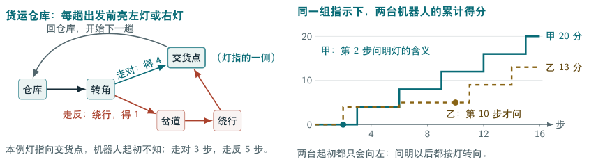
第 3–14 章的评价办法看不出这个差别。那里先训练，再冻结策略测试：甲、乙学会以后都按灯转向，冻结后测 步都得 ，奖励率都是 。差别发生在学会之前，乙按旧规则多跑了两趟，平均有一趟走反。持续强化学习改变的正是这一点：行动者边做边学，没有不计分的训练期，询问、走错和绕行都花真实的步数。站在智能体与世界之间的那一方也撤掉了：先学后用时，设计者替智能体挑选训练状态、给任务编号、安排重置，交互是设计者、智能体、世界三方；边学边做时只剩智能体与世界两方，下一次遇到什么，由世界和智能体自己的动作决定。第 13 章的语言智能体发出请求后才得到工具返回的核验结果，第 14 章的机器人与物体接触后才得到力反馈；两者都只能沿自己实际采取的行动获得经验，一次核验或一次接触若改变了控制，就会影响以后的许多次决定。持续强化学习研究一个行动者怎样在自己的 lifetime 内，从这样逐次取得的经验中形成知识，并用它改善以后的决定。
这带来三个困难。第一，冻结测试只看留下的策略，分不开学得早与学得晚的学习器。第二，学习器以后会遇到哪些历史，取决于它自己的行动：第 2 步甲询问、乙交货，此后两台机器人到达的历史分布就不同。第三，结算时刻会改变排序：只算前 步时，甲问到的答案来不及用，乙反而领先。三个困难背后是一个容量差距。世界中与行为有关的区别，多于一个有限智能体能够感知、记住和及时计算的区别，这一前提称为大世界假设（big world hypothesis）。智能体能保存的历史有限，用于核验、练习和规划的时间也有限，因此要选择学什么、保留什么。一项知识是否值得学，取决于它随后能否改善决定，并补偿学习它所花的行动与时间。
本章的方法是把评价对象从固定策略换成整个学习器：从第一次行动起，累计同一个学习器在评价期限内实际获得的主奖励，称为它的全程回报（lifetime return）。同一个学习器从第一次行动到评价期限 的这整段运行，本课称为它的 lifetime。探索、失败与恢复的代价，以及后来利用知识的收益，都计入这一个数。第 13 章的语言交互 · 第 14 章的感觉运动接口
第 3–14 章有四条常用结论，在这座仓库里各能找到一个反例。四条结论里的方程都还成立，改变的是方程作用的对象：从固定策略换成了学习器。表中的数由前向枚举算出，后文逐步给出；条件编号对应下面七项默认条件表里的 ①–⑦，四行的取舍和编号是本课的整理。
| 旧结论 | 仓库里的反例 | 条件 | 见 |
|---|---|---|---|
| 有平稳的最优策略（第 3 章） | 两台机器人都站在转角 、都剩 步，只是询问记录不同：问过调度的直接走就是最优，值 ；没问过的直接走只值 ，先询问再走值 。询问记录不同，最优动作就不同；把历史并进状态，结论又成立 | ①④ | 15.2 节 |
| 用状态上的 Bellman 方程求值（第 3–4 章） | 把历史并进状态后方程仍成立，只是状态多到算不动：单是各趟指示， 趟以后就有 种序列；对给定的学习器，改为沿历史和记忆向前累加（算法 15.1） | ① | 15.2 节 |
| 各回合是独立样本（第 5 章） | 把甲的 步切成两段：前 步期望得 ，后 步得 ，平均 ；后段从已学会灯义的记忆起步，不能当作 的样本，真实的 | ② | 15.2 节 |
| 谁更好与评价多久无关 | 学完以后甲、乙一样好；lifetime 时乙 、甲 ，从 起甲一直在前， 时甲 、乙 | ① | 15.3 节 |
第一行与第 3 章的定理并不冲突。那里的平稳最优策略以已知、有限的马尔可夫状态为前提；两台机器人位置和剩余步数都相同，背后的已知信息不同，最优动作随之不同。这一对比特意固定了剩余步数：第 3 章的有限期问题里，最优动作本来就随剩余步数改变，那不是这里要说的事。第三行的切段平均偏高，因为后一段从已学会灯义的记忆出发，不是从初始记忆出发的 8 步试验，不能当作 的第二个样本。第四行说明排序要先说清评价多久。
不同意见 有人认为这四条并未失效：把记忆和剩余步数都并进状态，就回到第 3 章的马尔可夫决策过程，平稳最优策略和 Bellman 方程照样成立。这在数学上可行，代价是状态随历史长度增长，有限的学习器算不动。15.2 节的历史 Bellman 方程因此只作比较基准；该节末的三种递推把三种计算并排对照，说明哪些部分仍成立、代价在哪里。
三类新困难。 学习器独自面对一条经验流，原来由实验者安排好的事，都落到它自己身上。这些事可以归成三类，下面的七项默认条件也按这三类分给第三部分各章。
第一类，成绩从第一步算起。试错本身计分，也没有回合总分可供比较，于是先要说清评价什么。这对应条件 ① 与 ②，由本章和第 16 章回答。
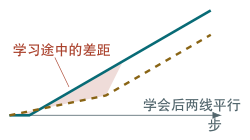
第二类，经验只来一次。样本不能存下来反复学，每一步只有有限的计算，很久以前的动作又要分到功劳。这对应条件 ③，问的是怎样更新，由第 17 章回答。
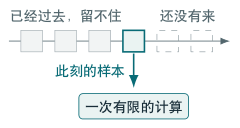
第三类，没有人替它准备。状态、预测目标、决策单位乃至学习规则本身，都要从经验里学出来。这对应条件 ④–⑦：第 18–20 章讲状态与预测，第 21–22 章讲决策单位，第 23 章讲学习规则。
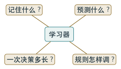
三类困难组合以后，还剩下持续设定特有的问题，由第 24–26 章处理。合起来，第三部分问的是：一个有限的学习器，怎样把一段 lifetime 里的步数、计算和记忆分配给各项学习活动，使全程回报最高？三分法是本课的整理；后文的六步、五样学习对象、八项决定、七个子问题和五个共同困难，都是对同样七项条件的不同切法。
不同意见 信用分配也可以归入第一类：把功劳分给很久以前的动作，本身就是一个评价问题。本课把它放在第二类，因为第 17 章关心的是每步计算有界时怎样记账。
第 3–14 章多数方法默认七项条件。第三部分逐项撤去它们，每撤去一项，就多一个问题，由一章回答；各章比较的是同一个量，即学习器 在世界分布 下前 步的期望全程回报 。例外有两处：第 6 章的 TD(0) 每个样本只用一次；第 14 章已按有限工时内的净收益计分。
| 多数前面章节的设定 | 撤去后的情形 | 回答它的章 | 六步 | 系统 3 表 |
|---|---|---|---|---|
| ① 先学后用：被评价的是固定策略 | 边学边做，被评价的是学习器 | 第 15 章 | 1、5 | 第 5 行 |
| ② 回合会结束：回报因终止或折扣有限 | 经验流没有终点，按奖励率比较 | 第 16 章 | 2 | 第 1 行 |
| ③ 经验可存可取：回放、多遍批量 | 每个样本只看一次，每步计算有界 | 第 17 章 | — | 第 1 行 |
| ④ 状态已给定，且是马尔可夫的 | 只有有限的 ，须判断并学出 | 第 18 章、第 20 章 | 3 | 第 2 行 |
| ⑤ 只预测奖励 | 预测任意累积量与终止方式 | 第 19 章 | 4 | 第 2 行 |
| ⑥ 一步一个决策 | 决策单位是时长可变的技能 | 第 21 章、第 22 章 | 4 | 第 3 行 |
| ⑦ 学习规则由设计者写定 | 步长与规则在 lifetime 内调节，并保持可塑 | 第 23 章 | 5 | 第 4 行 |
这张表是第三部分的总索引，圈码 ①–⑦ 在后面各节反复出现；最右两列是这一项落在 15.4 节六步的哪一步、落在系统 3 表的哪一行，③ 由第 17 章回答，不在六步之中。从这里起，智能体状态记 （表中第 ④ 行），与环境状态 区分。条件为什么要撤去，要回到第 1 章的大世界前提：智能体的计算和记忆有限，写不出世界的完整模型，也就不能先学完再用；七项条件里每一项都是只在小世界里站得住的简化。撤去全部七项之后还有三个问题（六步的第 6 步，系统 3 表第 5 行）：部件各自变好不保证整体变好（第 24 章）；试探、练习与写入都花真实步数（第 25 章）；实验只有一条 lifetime，不能重来（第 26 章）。第 24 章把两个学习器的差写成逐步优势之和，，第 16–23 章的每一种方法都可读作这个和式中某一类项的来源。
给定世界的分布、接口、预算和 lifetime，比较学习器从第一步起的期望累计奖励 。
| 格 | 本章的写法 |
|---|---|
| 世界与接口 | 世界 ，实际所处的世界未知；接口给出观测、动作和主奖励通道。仓库例：灯的含义（指向或背向交货点）事先不知，两种各半；每趟指示公平独立，观测为位置与指示，动作为左、右、询问，交货时给主奖励。大世界里写不出 ，实验用基准的生成器代替，结论只对该生成器成立（第 26 章）。 |
| 学习器可改什么 | 学习器 ：初始化规则 给出开场记忆 ，行为规则 按记忆选动作 ，更新规则 用每步反馈改写记忆 。记忆 含智能体状态 、可学习参数 与其余持久量 。仓库例只改 ，即转角 处的规则；三条规则本身由设计者给定，第 23 章再让规则本身可学。 |
| 目标 | 在预算允许的学习器 中比较 ；等价地看遗憾 （15.3）。 |
| 预算 | 每步计算与存储有上限 ；lifetime （仓库例 ）；没有不计分的训练期。仓库例甲、乙每步只查一张小表，所以预算不紧。第 17 章的单遍更新和第 24 章的部件组合会让预算成为起作用的约束。 |
| 本章困难 | 冻结测试分不开甲、乙；学习器以后会遇到哪些历史取决于它自己的行动；排序随 改变。 |
| 怎样判定做成了 | 同一 、同一 、同一预算下配对比较 ：甲 ，乙 。 |
撤去的条件：① 先学后用。第 3–14 章先训练、再冻结策略 测试；这里从第一次行动起计分，探测、练习和失败的奖励都在里面。主例是仓库配送：仓库 公平独立地亮左或右，机器人在转角 选路，按灯走到 得 ，走反经 绕到 得 。两个学习器起初都总向左，都会在 询问一次调度、从此随灯；甲在第 2 步询问，乙在第 10 步。同一 16 步、同一组指示下，甲累计 ，乙累计 。这对应研究地图的第一个子问题“学习器的评价”，也是第三部分六步中的第 1 步“目标”。
是三层期望：最里层是一条 lifetime，一个学习器在一个世界里跑 步，把每步奖励加起来；中间一层对学习器自己的随机性取平均，例如随机初始化和随机探测；最外层对世界取平均，仓库例中是对指示序列取平均。只做最里层，得到的是一次运行的成绩，甲 、乙 ；三层都做完，得到期望全程回报，甲 、乙 。
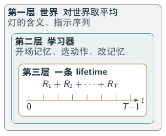
与 Sutton 与 Barto 第 10.3–10.4 节的平均奖励设定相比，本章和第 16 章多出三项：把学习代价计入的 与遗憾，差分价值带来的额外误差，目标的其他写法及其取舍。
不同意见 六格的问题卡把“学习器可改什么”与“世界与接口”分得很清楚。有人认为这条界线本身就是要学的：机器人可以搬动货架、改变自己以后的观测，接口和世界的划分随之改变。也有人主张不必先写 lifetime ，直接比较长期平均；15.3 节末讨论这些写法的取舍。
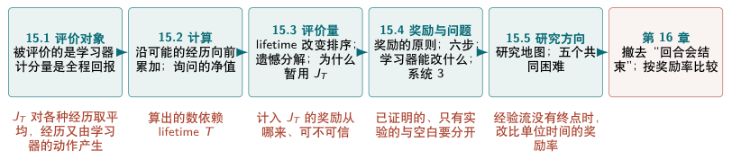
下表按“方法—解决的困难—留下的困难”排列各节，留下的困难由下一行处理。
| 节 | 方法 | 解决的困难 | 留下的困难 |
|---|---|---|---|
| 15.1 | 先看甲、乙两条轨迹，再定义学习器 与全程回报 | 冻结测试给甲、乙相同的 ， 分出 与 | 对各种经历取平均，经历又由学习器的动作产生；怎样算出这个数？ |
| 15.2 | 历史分布、历史价值与算法 15.1 的前向枚举 | 精确算出 ；剩两步时询问值 ，猜一侧 | 算出的数依赖 lifetime 与计时单位；换一个 ，排序是否不变？ |
| 15.3 | 按 lifetime 列表 ；规定原始步时钟；分解 | 时乙在前， 时甲在前；遗憾与 排序相同，lifetime 变长时不发散 | 目标写定了，计入 的奖励从哪来、可不可信？第三部分其余各章的问题怎样定义？ |
| 15.4 | 奖励的来源与三条原则；第三部分的六步；系统 3 | 主奖励通道归世界与接口，代理和内部信号要能检验；六步各在一章首次定义 | 六步定了，各步的研究走到哪里？还有哪些困难没有答案？ |
| 15.5 | 从给定问题到自己提出的问题；研究地图的七个子问题；五个共同困难 | 把 拆成七个子问题，指向回答它们的章；列出尚无答案的困难 | 时 随 近似线性增长，两者的率都是 ；没有终点时怎样比较策略？（第 16 章） |
不同意见 15.4 节讲奖励与问题从哪来，也可以放在最前面，先交代问题的来源，再谈怎样评价。本章把评价放在前面，因为 15.4 节的奖励原则要用问题卡的六格，这六格要等评价写完才齐全。
与其他章的联系。 本章用到前文四处：第 2 章 2.1 节的累计遗憾，15.3 节把它推广为 ；第 3 章 3.5 节的有限期价值，固定策略的 就是它在各个世界上的平均；第 6 章 6.3 节的 Q 学习，15.1 节把它写成学习器的三条规则；第 14 章的系统 3，15.4 节把它放进第三部分的结构。本章为后文准备五处：第 16 章 16.1 节在 时改用奖励率；第 23 章 23.2 节调节的步长属于记忆中的 ；第 24 章 24.2 节把两个学习器的 之差逐步分解；第 25 章 25.2 节回到一次探测值多少，即本章询问值随剩余步数变化的问题；第 26 章 26.1 节用配对 lifetime 差估计两个学习器的 之差。
本章记号
下表列出本章使用的记号。第 16–26 章引入的记号（差分价值、资格迹、GVF 问题、技能及其模型、元参数等）在各章开头列出。
| 记号 | 含义 | 首次出现 |
|---|---|---|
| 原始时间步；评价期限（前 个原始步） | 15.1 | |
| 观测、原始动作、主奖励 | 15.1 | |
| ； | 时刻 行动前可见的历史；作为函数自变量的一段历史 | 15.1 |
| 世界的隐藏马尔可夫状态，仅供分析，行动者不能读取 | 15.1 | |
| 智能体状态：为预测与行动维护的内部摘要； 是刚到达的反馈， 是状态递推， 为其参数 | 15.1 | |
| 完整学习器状态：智能体状态、可学习参数（如 、）、其余持久量 | 15.1 | |
| 学习器：初始化规则 、行为规则 、更新规则 ； 只读智能体状态且不随学习改变时，就是行为策略 | 15.1 | |
| ； | 一个具体世界及其先验；该世界给定可见历史和动作时奖励与下一观测的分布（反馈核） | 15.1 |
| ； | 学习器在世界先验 下前 步的期望主奖励；预算 允许的学习器集合 | 15.1 |
| ， | 策略在历史 上的动作分布；行为策略 | 15.2 |
| ； | 剩余 步的策略价值与动作价值；历史上的最优价值 | 15.2 |
| 算法 15.1 中历史与记忆在第 步的联合概率 | 15.2 | |
| ； | 策略的奖励率（每原始步平均奖励）；奖励率的在线估计 | 15.3 |
| 折扣因子 | 15.3 | |
| 两个学习器在配对 lifetime 上的累计奖励差 | 15.4 |
带帽记号（如 、）表示由数据学得的估计或模型值；向量用粗体，如 、、、。
15.1 评价对象：从策略到学习器课件
第 3–12 章评价的对象是一项策略：固定它，再估计它的价值。本章的智能体在运行中不断改变策略，评价一项固定策略不再能说明它学得好不好。本节先看仓库中两个学习器的两条轨迹，再写出交互接口和有限记忆，定义学习器 与全程回报 ，并把两者逐项对到第 3–14 章的策略、价值与回报上；最后说明冻结测试为什么分不开这两个学习器。
第 3–5 章给策略 定义价值，再用模型或轨迹估计同一个期望。第 6–8 章开放行动选择，探索、延迟反馈与规划开始影响这个估计。第 9–12 章允许许多状态共用参数，并允许学习器读取回放、模型样本或其他行动者收集的经验。本章继续使用这些方法，同时把取得经验的条件写入问题。一个模型样本只多产生一次价值更新；一次实地探测却可能改变智能体所在的位置，以及它下一次能采到什么样本。
回到章首提到的语言智能体和机器人：语言智能体可以在工作区保留失败测试和工具返回，供下一次修改编译器时调用；机器人可以记住上一次接触的力反馈，下次接近工件时调整动作。两者的观测、时间单位和再次尝试的代价都不同，学习问题却相同：一项知识在当前决定之后仍然可用。即时奖励相同的两次行动，一次可能让智能体日后更早识别故障，另一次可能把它带到很久以后才能恢复的状态。固定策略的价值仍有定义；要评价这些获取知识的行动，所评价的学习器还须包括以后的更新规则。
本章由此考察三项相依的条件。有限的状态必须保留足以继续估计的信息（第 18 章）。估计所需的经验必须能由真实行动取得（第 16 章）。状态、预测或技能经过更新后，须有机会影响随后的行动，且所得收益须能补偿获取和使用知识的代价（第 24 章）。这些条件在同一个学习器上可以分别检验。
第三部分按上面的七项默认条件安排，本章只撤去第一项。后面各章依次撤去其余各项；撤去以后要回答的问题，在本章的全程回报下统一计分。原先按起点分组的三条路线如下，它们分别落在第 16–18 章、第 17–20 章和第 21–26 章。
| 起点 | 各章内容 | 仍然给定 | 交给学习器的决定 |
|---|---|---|---|
| 持续控制与状态（第 15、16、18 章） | 写出交互接口、学习器和全程回报；问有限的智能体状态须保留哪些历史区别；换用没有终点的长期奖励率作为控制准则 | 行动接口、资源及比较后果的准则 | 保存哪些历史区别，采取什么行动 |
| 在线预测与表示（第 17、19、20 章） | 在单条经验流上讨论在线信用分配、通用价值预测和状态构造 | 一项可核验的预测 | 在线分配信用，估计多种后果，从预测误差构造状态 |
| 技能、规划与自主学习（第 21–26 章） | 引入持续多步的技能及其后果模型，并用模型规划；让更新规则本身随经验调整；把这些部件放进同一个学习器，检验共同学习时的交互效应和同一经验流中的知识发现与规划复用；讨论研究环境与基准，以及语言与身体两种接口 | 一次交互的成本、可获得的反馈和初始能力 | 学会技能并用其后果规划，怎样调整学习规则，提出和保留哪些知识，以及是否采纳新的目标 |
仓库中的两个学习器
仓库 每趟公平独立地亮左灯或右灯，灯指向这一趟交货点 所在的一侧。机器人从 出发到转角 （奖励 ），在 选左或右。走对了到 得 ，再回 得 ，一趟 步；走反了进 得 ，绕到 得 ，经 回 各得 ，一趟 步。总向左每趟平均得 、平均用 步，奖励率 ，这是不看灯时最好的规则；随灯每趟 步得 ，奖励率 。
灯指向交货点一侧，是本章算例所取的世界。机器人面对的其实是两种可能：灯指向交货点所在的一侧，或背向它，两种各半，事先不知道；两个世界左右对称，算出的数相同。
总向左的平均水平可以从两趟看出。设第一趟亮左灯、第二趟亮右灯：
| 灯 | 左 | 左 | 左 | 右 | 右 | 右 | 右 | 右 |
|---|---|---|---|---|---|---|---|---|
| 动作 | 出发 | 向左 | 回仓 | 出发 | 向左 | 绕行 | 前行 | 回仓 |
| 到达 | ||||||||
| 奖励 |
第一趟走对， 步得 ；第二趟走反， 步得 ；两趟合计 步得 ，每步 。随灯每 步得 ，快了一倍多。机器人还有第三种做法：在转角停一步询问调度，这一步得 ；调度说明灯的含义以后，机器人随灯走。本章比较的，就是在什么时候问。
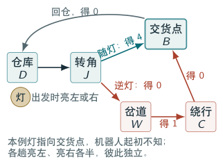
两个学习器只在询问调度的时刻上不同。三行写开始时、怎样行动、怎样改，括号里的记号在下文定义：
| 甲 | 乙 | |
|---|---|---|
| 开始时（） | 转角 处的规则：总向左 | 同左 |
| 怎样行动（） | 第 1 趟在 询问调度（占一步，得 ） | 第 3 趟在 询问调度 |
| 怎样改（） | 询问后把 处规则改为随灯 | 同左 |
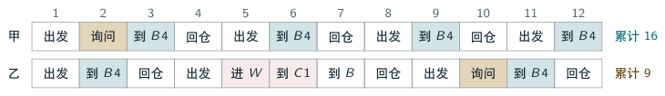
询问的代价是一步；不询问的代价是每遇到一次右灯，少得 分、多走 步。哪一种划算，要看后面还剩多少步，这是 15.3 节的问题。
乙在第二趟的绕行里其实已经拿到了推出灯义的数据：第 6 步它到了 ，看到交货点在灯的反侧。它的规则却没有变，因为它的更新规则只认一种反馈，即调度的回答；绕行得到的奖励和观测都到了，它的更新规则不据此改写转角处的规则，规则仍是总向左。两台机器人收到的数据可以一样多，学到多少由更新规则决定。一台会从绕行结果推出灯义的学习器，行为规则与乙相同而更新规则不同，正好构成对更新规则的对照。
取指示依次为左、右、左、右……的同一条 lifetime，16 步内两者每一步的累计奖励为：
| 步 | 1 | 2 | 3 | 4 | 5 | 6 | 7 | 8 | 9 | 10 | 11 | 12 | 13 | 14 | 15 | 16 |
|---|---|---|---|---|---|---|---|---|---|---|---|---|---|---|---|---|
| 甲 | 0 | 0 | 4 | 4 | 4 | 8 | 8 | 8 | 12 | 12 | 12 | 16 | 16 | 16 | 20 | 20 |
| 乙 | 0 | 4 | 4 | 4 | 4 | 5 | 5 | 5 | 5 | 5 | 9 | 9 | 9 | 13 | 13 | 13 |
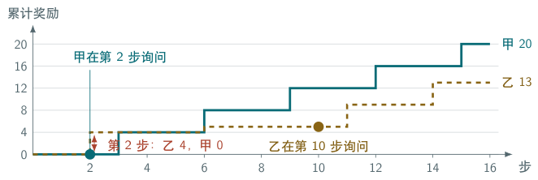
乙领先的只有第 2 步。甲先付出询问的一步，此后每一趟都用上答案，到第 16 步领先 。这条曲线有两种读法，要分开。一种问谁先学会：甲在第 2 步，乙在第 10 步。另一种问谁的累计奖励高：答案取决于在哪一步结算，在第 2 步结算是乙高。表中是一条样本路径；期望值要对所有指示序列平均，由 15.2 节计算。
交互接口与有限记忆
时刻 ，智能体根据当时可用的信息发出动作 ，环境随后返回观测 。若任务规定了奖励通道，同时返回标量 。温度、接触读数、他人的请求都可以是观测。控制器能决定发出复接命令；供电是否实际恢复，还要经过执行器、负载和电路。这就是这里的智能体—环境边界。边界随研究的决策层次改变。把低层控制器划进环境以后，高层看到的是命令的执行后果。Sutton 与 Barto，第一版 §3.1–3.2
记 为行动前已经得到的经验， 为从中保留、供预测和决策读取的内部状态。学习器另外还保存参数和学习所需的统计量。环境没有义务标出任务的分界，也没有义务在学习器犯错后让它重来。部分可观测的平稳世界就能产生这些困难；本章还允许世界变化，或因一次不可逆的行动而失去未来的机会。
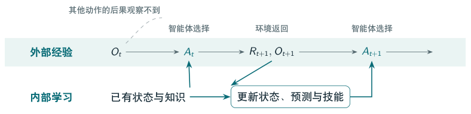
图中两行合起来产生整条经验流，产生它的三条规则本课合称学习器，它是被评价的对象。策略只规定此刻怎样选动作，学习器还规定它以后怎样变；固定策略可以看作从不更新的学习器。
易错 把持续学习等同于任务一个接一个来，学新任务时不忘旧任务。这里的对象是一条没有任务边界的经验流，环境不会标出一个任务在哪里开始。
单一经验流中的评价对象
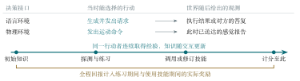
固定策略的价值给出采用这项策略时的期望回报。评价允许更新的学习器，还要指定它怎样设置初始记忆、怎样选动作、怎样更新，记作 ，三项依次为初始化规则、行为规则和更新规则；上面甲、乙表里的三行就是这三项。行为规则 读完整学习器状态；若它只读智能体状态且不随学习改变，就是 Sutton 与 Barto 记号中的行为策略 。评价对象是学习器从第一次行动起、在 个原始步内取得的期望总奖励，即全程回报的期望；它的正式定义 以及所需的世界分布和资源预算，见下文本章的持续控制问题。若比较学习器 ，两者的动作可能不同，因而各自应在自己产生的后果上更新。实验者可用独立运行估计两个期望；一条给定轨迹只记录了实际采用的行动。评价期限指明在哪一刻结算，机器人或语言服务可以在结算后继续运行。
在已知、平稳的 MDP 中，同样可以让两个学习器各自行动并比较全程回报。部分可观测、环境变化、可否回放旧经验，以及能否用模型作规划，都是可以分别改变的条件。把更新关闭，就得到已有策略的部署评价。采用平均奖励评价长期运行，还需要指定单位为原始步或物理时间，并说明奖励率存在的条件。一个仅在开工时发生的练习成本会计入有限期全程回报，在长期平均中则可能消失。
第三部分各章共用这样一种接口：一条不重置的经验流，从第一步起每一步都计分。第 14 章留下的问题是，机器人今天学到的握力，下一班还能不能用；要回答它，评价就得从第一次试握的代价算起。三种接口可以写进同一张表：
| 接口 | 能选的行动 | 世界随后给的观测 | 奖励 | 计分到哪里 |
|---|---|---|---|---|
| 语言（第 13 章） | 发出一条消息或请求 | 执行结果或对方的答复 | 每轮一个，终局才非零 | 有限的轮数 |
| 物理（第 14 章） | 发出运动命令 | 已经到达的信号 | 每段命令的净收益 | 剩余工时 |
| 仓库（本章） | 向左、向右、询问 | 所在位置、灯的指示 | 交货得 ，绕行得 | lifetime 步 |
三行有两点相同。第一，同一个行动者一直运行，世界不替它复位，学到的东西带到以后。例如语言服务跨会话保留核验结果，机器人保留接触经验，仓库机器人记住灯的含义。第二，计分有约定的终点，从第一次行动起，每一步的奖励都算数。研究者可以从同一个初始分布独立重做多次运行，用来估计期望；在一次运行之内，智能体没有重置的权利。
两种计分各有适用的场合。训练可以在模拟器里反复重来，或者训练的花费另行核算时，先训练再冻结测试是合理的做法。经验只有一份时，例如一台正在送货的机器人，只看测试等于把学习期间的损失一笔勾销。下文冻结测试与全程回报把两种计分放在同一条时间轴上比较。
本章的持续控制问题
先固定控制目标，并约定每个行动后果对应的奖励。设评价窗口跨越 个原始时间步。行动以前，智能体可获得的历史为 是观测， 是即将执行的动作。行动以后才有 和 。 是智能体为预测与行动维护的内部状态。完整学习器状态 还包括可学习参数 和其余持久量 ，例如优化器状态、累积统计和候选技能库。允许的运算、存储和实际可发出的动作由接口与资源预算给定。对于同一个 ，不同初始化或私有随机选择也可能产生不同的 。
定义 15.1（全程回报） 给定世界的分布 、每个世界的起点分布、资源预算 、初始知识及反馈权限。一次运行先抽取世界 及起点，以后每次都只返回实际所选动作的反馈。各学习器能保留自身经验，无法任意要求世界回到过去。令 为满足这些条件的学习器集合。当控制准则采用可累加的主奖励时，在这组可实现的学习器中比较从第一次行动起实际获得的期望总奖励。
是世界 在历史 上响应动作 的奖励与观测分布。 集中于单个世界 时记作 ；逐个世界计算 ，再对 取平均，就得到 。 用于定义比较，学习器能否知道它由信息条件决定。预算 同时限制存储、每步计算和对旧经验的读取：允许回放时，保存旧转移占用存储，重新采样消耗计算。这几项条件的定义见下文流式条件与动作期限。 只截止计分。技能在途中交回控制、某项预测到期或一笔订单完成，都不要求清空 或重置世界。
时刻从 记到 ，奖励从 记到 。奖励 由世界一方规定：仓库里交货给 或 ，其余为 ；学习器只能通过行动影响它拿到哪些奖励，不能改写奖励本身，奖励从哪里来留到 15.4 节。固定策略也在 里，它是从不改参数的学习器。 可以由内向外分三层读。最里层是一条 lifetime 上的和：甲在 16 步里于第 3、6、9、12、15 步各交货一次，和为 ；第 2 步它停下来询问，奖励为 ，这一步照样计入，冻结测试会把它漏掉。中间一层对学习器自身的随机性平均，甲、乙的规则是确定的，这一层不改变数字。最外层对世界平均：甲在每个世界里都得 ；乙在交替亮灯的那一次运行里得 ，对指示序列平均后是 。灯的两种含义左右对称，只看灯指向 的那个世界算出的数，与对两种含义平均的结果相同，本章的逐步算例都取这个世界。
行为规则与更新规则
供电控制器可以立即复接，也可以先取得负载读数。两种选择会产生不同的下一条观测，也会改变它以后判断是否需要测量时可用的记忆。只要后续行动会利用这些反馈，从同一起点评价两种学习器，就须让各自的行为和更新规则共同生成一整段 lifetime。沿用学习器 的记号。给定初始化规则 和环境的开场观测分布，下面三个条件分布逐步生成一条交互轨迹。 第二行不要求最新观测就是马尔可夫状态。若世界有隐藏的马尔可夫状态 ，并且时齐的环境与更新规则分别保留了产生下一步的全部条件，则 是一个时齐马尔可夫过程。若 仍在修改知识，即使 固定，下一步动作的分布与访问的区域也会改变。知道这样的联合状态存在，不会把 或它的转移律交给行动者。
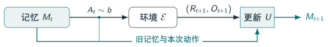
三条规则和第 3–14 章的对象可以逐项对上，前面各章的算法都能写成这种形式。环境 在第 3 章是一个有限 MDP，下一步的分布 只看当前状态和动作；这里允许它看整段可见历史，写成 ，MDP 是历史只经由当前状态起作用的特例。写成历史条件，并不要求环境或智能体真的存下全部历史。观测 在 MDP 里就是状态 ；仓库里的机器人看得到位置和本趟的指示灯，看不到灯的含义，观测不是完整的状态。记忆 是智能体保存的全部东西，第 6 章的 Q 表、第 9 章线性逼近的权重都只是它的一部分。初始化规则 对应各章算法第一行的“初始化”，例如把 全设为 。行为规则 对应策略 ：第 3 章的策略只读状态， 读记忆，记忆随学习改变，同一个观测下的动作分布也随之改变；对 的 -贪心是一例。更新规则 对应各章的更新式，例如第 6 章的 。
流式条件与动作期限。 第三行的 只读当前学习器状态和刚到达的反馈，但这一写法本身不限制 能存下多少旧经验。记刚到达的转移为 ，它包含 以及学习器为这一步记下的状态。在线交互允许学习器在运行中更新参数，随后用新参数预测或行动；例如 DQN 在交互中把 放入容量固定的回放池，再从池中抽样。批量更新把若干转移一起用于一次更新，这些转移可以是交互中新来、凑成一批的，也可以取自已经收完的固定数据集。严格流式更新（strict streaming）在 到达时处理它，随后只留下可递推的学习记忆 。它规定 ，其中存储上限 属于预算 ，不随已过的环境步数增长；它还规定用过的原始转移不可重读作训练样本。参数、资格迹和归一化统计都计入 。固定容量的回放池也有存储上限，区别在于它允许再取出旧样本。这些条件限制可用的算法，不改变待预测或待优化的量。Mnih 等，经验回放，算法 1 · Elsayed 等，Stream-X，§1
实时还有另一只钟。设新观测已到，距下一动作发出还有 毫秒。若动作须读本次更新后的参数，更新和选动作的串行用时需满足 ；也可先用现有参数发出动作，再为随后的动作更新。动作版本、延迟以及世界是否在等待时继续变化，决定一次更新最早能影响哪次选择。存储上限、旧样本能否重读和每步期限是三项分别说明的条件：在线交互可以带回放，满足实时期限的学习器也可以不是严格流式。
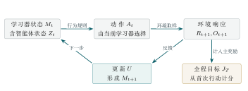
一次更新改写了记忆的哪一格。 甲的记忆 中， 记位置与本趟指示， 是转角 处的规则， 是趟次。
| （位置，指示） | （ 处规则） | ||||
|---|---|---|---|---|---|
| 0 | ，左 | 总向左 | 1 | 出发 | 0 |
| 1 | ，左 | 总向左 | 1 | 询问调度 | 0 |
| 2 | ，左 | 随灯 | 1 | 向左 | 4 |
| 3 | ，左 | 随灯 | 1 | 回仓 | 0 |
| 4 | ，右 | 随灯 | 2 | 出发 | 0 |
| 5 | ，右 | 随灯 | 2 | 向右 | 4 |
| 6 | ，右 | 随灯 | 2 | 回仓 | 0 |
更新是 ，其中 为询问，， 为“ 在左，与灯同侧”。
- 由总向左改为随灯； 与 不变。（更新只改写规则）
- 第二趟在 处，旧规则选向左，新规则选向右。（灯为右）
- 这一趟由 步得 变为 步得 ，第 6 步的奖励 。（走反须经 、 绕行）
询问占用的一步同样计分：第一趟甲用 步，按灯直达只要 步。
记忆的三部分与 Q 学习课件
记忆分三部分，。智能体状态 是为选动作保留的历史摘要，由状态递推 维护，其中 ：奖励也是反馈，也可能透露世界处在哪种模式。完全可观测的 MDP 里观测就是状态，取 就够了，递推本身带参数 、需要学习的情形留给第 20 章。 是通常意义下的可学参数：价值表、第 9 章的权重 、第 11 章的策略参数 。 收纳其余会保存下来、影响以后学习的量，例如访问计数、步长和回放缓冲区；后面各章还会往里放资格迹（第 17 章）和候选技能（第 21 章）。
把前面最熟的两个对象写成学习器，和仓库里的甲并排：
| 表格 Q 学习（第 6 章） | 固定策略 | 仓库里的甲 | |
|---|---|---|---|
| 位置与本趟指示 | |||
| Q 表 | 不变 | 转角处的规则 | |
| 步长 | 无 | 第几趟 | |
| 初始化 | 不用学 | 规则设为总向左 | |
| 行为 | 对 取 -贪心 | 第 1 趟到转角先问 | |
| 更新 | Q 学习更新式改一格 | 只换 | 问过后规则改为随灯 |
表格 Q 学习把 Q 表全设为零，步长放在 ；行为规则对当前表做 -贪心；更新规则只改 这一格，同时把 换成新状态。固定策略也有三条规则，只是更新规则只换 ，参数永远不变，所以评价一个策略是评价一个学习器的特例。反过来，每个学习器都诱导一个历史策略 （15.2 节）；甲在转角的动作取决于问过没有，只读当前位置的固定策略一般复现不了它。甲的 是第几趟，行为规则靠它决定第 1 趟到转角先询问，更新规则在问过以后把规则改成随灯，每回到仓库一次把趟数加一。乙和甲只差行为规则：乙到第 3 趟才询问。学习器的集合因此包含两部分：从不改写参数的固定策略，以及会改 的学习器，前面各章的 Q 学习、Sarsa 和本章的甲、乙都在后一部分。
小例：两臂赌博机课件
用一个最小的例子把 算一遍，并和第 2 章接上。赌博机是只有一个状态的 MDP，每次拉一只臂，奖励只看这只臂。世界有两个，各占一半： 里左臂每次给 、右臂给 ； 反过来。学习器事先不知道是哪个世界，lifetime 取 次拉臂。同一个 既给会学的学习器打分，也给固定策略打分。
| 学习器 | |||
|---|---|---|---|
| 固定策略：总选左 | 10 | 0 | 5 |
| 贪心样本平均（第 2 章） | 10 | 9 | |
| 知道世界时的最好成绩 | 10 | 10 | 10 |
总选左这一规则也是一个学习器：记忆里没有可学参数，行为规则永远选左。它在 里得 ，在 里得 ，平均 。固定策略 的全程回报就是第 3 章 3.5 节的有限期价值在各个世界上的平均，，这里是 。
第 2 章的贪心样本平均学习器以两只臂的估计 和次数 为记忆；初始化取 、；行为规则选估计大的臂，平局选左；更新规则把拉过那只臂的次数加一，估计朝新奖励移动 ，即 。在 里它第一次就拉对，以后一直拉左，得 。在 里的前三步如下：
| （左，右） | ||||
|---|---|---|---|---|
| 0 | 左 | 0 | ||
| 1 | 右 | 1 | ||
| 2 | 右 | 1 |
第一次拉左得 ，左臂估计降到 ，右臂仍是 ，于是改拉右，得 ，右臂估计升到 ，此后一直拉右， 次得 。两个世界平均，。知道世界时的最好成绩是：知道是 就总拉左，知道是 就总拉右，都得 。这是上界：没有一个学习器能在两个世界里都拿到它。贪心学习器比它少 ，来自 里第一步拉错的那一次，这一步的 计在 里，是学习的代价，冻结测试会把它漏掉。总选左比上界少 。一般地，贪心学习器 ，总选左 ， 越长，差距越大。这个小例由本课构造，数字由逐条枚举得到。
第 2 章的各张学习曲线对许多次独立运行平均每一步的奖励；独立运行对应这里对世界和学习器随机性取平均，把每步平均奖励从第 1 步加到第 步，就是对 的估计。第 2 章 2.1 节的累计遗憾，在每个世界里就是知道世界时的最好成绩减去学习器的期望累计奖励；15.3 节在一般情形下定义遗憾。
全程回报与前面的回报课件
固定策略价值给定规则与起点；全程回报给定学习器与初始记忆，计入边学边做的每一步。四种记分并排如下：
| 第 3 章 价值 | 第 5 章 回合回报 | 冻结测试 | 本章 全程回报 | |
|---|---|---|---|---|
| 式子 | 冻结 后测 | |||
| 谁在行动 | 固定策略 | 固定策略 | 学完后的固定策略 | 一直在改记忆的学习器 |
| 计分区间 | 从状态 起，无限步加折扣 | 每回合从头到终点 | 只算测试回合 | lifetime 第 到 步 |
| 平均对象 | 与 的随机性 | 起点与轨迹 | 测试回合 | 世界 、 与 |
| 怎样算 | Bellman 方程 | 多回合平均 | 同左 | 算法 15.1（15.2 节） |
第 3 章的价值从状态 出发，把以后的奖励乘上折扣 加起来，对策略和转移的随机性取期望，用 Bellman 方程求。第 5 章的回合回报每个回合从头加到终点，回合之间重置，用多回合平均估计。许多实验报告的是冻结测试：先训练，训练结束后冻结参数，再测若干回合的回报，训练期间的奖励不计。全程回报从 lifetime 的第一步加到第 步，每一步的权都是 ，对世界和学习器的随机性取期望，由 15.2 节的算法 15.1 计算。把四种记分画成每一步的权：折扣价值的权从起点按 变淡，起点以前的步不计；回合回报在每次重置处从头计；冻结测试给训练段的权为零；全程回报每一步的权都是 ，甲在第 2 步询问得的 也在里面。
三者对上的方式有三层。固定策略在已知世界 里，全程回报就是第 3 章 3.5 节的有限期价值，，取 ，剩余步数为 。世界未知时，对各个世界的有限期价值按 加权平均，，上面的总选左就是这样算出 。学习器会改记忆，下一步的动作分布取决于它学到了什么，只看当前状态的 Bellman 递推不再够用，15.2 节把历史和记忆都放进递推里。
冻结测试与全程回报课件
取学习器在第 步的决策规则，冻结学习参数，从共同起点再测一段回报，回答的是这个学习器现在会做什么。 则保留此前为获得这项能力所走的每一步。例如两个学习器最终都每步获得 ，其中一个先花 步取得零奖励。它们的固定末次策略和极限平均率可以完全相同，可是在 的工作期内，期望累计奖励相差 。冻结参数时仍要推进执行所需的记忆，否则测试的是另一种控制器。
仓库例给出同样的情形。第 3–14 章的协议在学习结束后冻结策略，再从仓库出发测试。甲、乙学会以后的策略都是随灯，冻结测试的成绩相同，分不开两者：
| 评价量 | 甲 | 乙 |
|---|---|---|
| 冻结后的奖励率 | ||
| 冻结后 16 步测试回报 | ||
| 全程回报 （期望） | ||
| 学会的时刻（左右交替） | 第 2 步 | 第 10 步 |
前两行只问学完以后的策略有多好，答案相同。第三行从第一次行动起计分，期望值 与 由第 15.2 节的算法 15.1 算出；累计奖励曲线里乙的 是左右交替那一组指示下的一次运行。两者之差来自学会的时刻。乙前两趟按总向左走，第三趟询问，此后随灯，所以它的 16 步回报只取决于前两趟的指示：两趟都亮左灯，一次不绕，得 ；一左一右，绕行一次，得 ；两趟都亮右灯，绕行两次，得 。四种开局各占四分之一，平均 ；曲线用的左右交替指示属于“一左一右”这一格。甲在第一趟就询问，四种开局都得 。
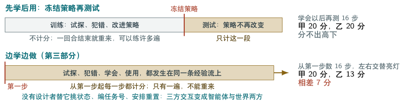
易错 把学会以后的成绩当作学习器的成绩。冻结测试评价的是留下的策略 ，全程回报评价的是学习器 ；两个学习器可以留下同一个策略，却在学习期间得失不同。
表的第四行回答另一个问题：谁先学会。先学会通常意味着全程回报更高，但 15.3 节会给出反例：lifetime 很短时，先停下来询问反而吃亏。仓库里冻结测试只是分不开甲和乙；下面文献中的黑白世界里，学习器装不下世界，冻结测试会把一直在学的学习器排在最后。
实验：黑白世界中的跟踪与冻结
仓库的表格装得下整个世界，学会以后可以停止更新。学习器装不下世界时，情形不同。Sutton、Koop 与 Silver 构造了一个平稳的小世界： 个格子连成环，左边 格黑、右边 格白。智能体每一步以概率 观看所在格，以 向左、 向右走一格；只有观看时才得到颜色 ，黑为 、白为 。学习器只有一个权重 ，输入恒为 ，预测 ，每次观看后按 更新，损失取交叉熵。
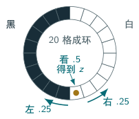
权重若收敛到 ，预测恒为 ，损失为 。智能体走得慢，相邻几次观看多半落在同一种颜色里，经验在时间上相关；一直用大步长跟着改的预测，可以利用这种相关。下图是 的一段运行。
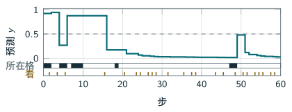
图中第 19–46 步智能体停在白区，预测降到 ；第 48 步看到黑色，预测跳回约 。这条轨迹是本课的重跑，步长与颜色布局同原文，随机数不同。原文图 3 用 次运行、每次 万步，统计后 万步： 时平均损失约 ，约为收敛解的三分之一。这是这个环、这一类单权重预测、交叉熵损失下的结果：世界平稳，一直跟着改的预测仍比收敛解好得多。
步长取到 有它的道理。前面各章的步长多在 上下，是为了在噪声里慢慢收敛到一个固定答案。这里颜色在环上成段出现，游走又慢，眼前这一段是什么颜色，比全环的平均更能预测下一次看到什么；步长大，学习器几步之内就跟上当前这一段，所以远大于常见值的步长反而好。这里的度量是后 万步的平均损失，和 不是同一个量：它不计前 万步，也不是奖励。它给本章的论证补上另一面。世界不变、学习器装不下世界时，一直跟着改的预测仍胜过收敛以后停下的预测。所以即使在平稳世界里，也要评价学习器本身。
这与仓库是同一困难的两个尺度。仓库里学会以后可以停；黑白世界里一旦停下，就只剩 。这个例子的局限是：只有预测，没有控制；只有一个权重；世界又小又平稳。
不同意见 给每个格子一个权重，预测就能完美，跟踪的优势随之消失。这一反驳成立，例子的力量全在容量小于世界这个前提上。大世界假设意味着这一前提总会在某处出现；在一个具体问题里它是否成立，要看学习器能否装下所需的信息。
如果在某一刻停止学习，把当时的权重冻结下来长期使用，结果怎样？
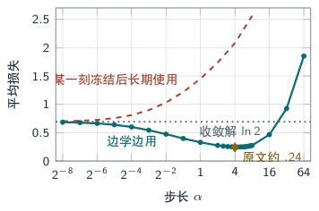
步长越大，任取一刻的权重越极端：刚在白区待久了，预测已是 ，拿它长期预测，一半时间要付很大的损失。 冻结后的损失约 ，约为收敛解的三倍。按冻结测试排名，步长越小越好；按边学边用排名，步长 最好。仓库里冻结测试分不开甲和乙；这里冻结测试把一直跟踪的学习器排在最后。
本课按原文设定重跑了这个实验，与原文的对照如下。IDBD 是一种在运行中逐坐标调步长的方法，第 23 章再讲。
| 量 | 原文 | 本课重跑 |
|---|---|---|
| 的平均损失 | 约 （图 3） | |
| 收敛解的损失 | ||
| 最好的固定步长 | –（图 9） | |
| IDBD 调到的步长 | 接近最好的固定步长（图 8） | – |
| 去掉时间相关以后 | IDBD 几乎无益（图 10） | 对 |
| 冻结 的权重 | 未报告 |
损失与最好的固定步长都与原文相符。去掉时间相关以后，固定步长最好是 ，IDBD 最好也是 ，与原文图 10 的结论一致；IDBD 只在初始步长很大时把损失降下来。不符的是 IDBD 最后调到的步长，比原文图中略低：原文图 8 下的正文写明，最后一万步的步长在 到 之间。各组标准误很小，抽样误差解释不了。可能的原因有两个：本课在原文中没有找到初始权重和起始位置；对 logistic 输出，IDBD 的迹有几种写法，本课用含 的一种。重跑与原文都统计最后一万步，统计区间不是原因。初始步长取 的一组到 万步仍在上升，所以范围下端 未计入表中。重跑的设置：固定步长每个取值 次独立运行，每次 万步；IDBD 从 个初始步长出发，各 次，每次 万步。还有一处与本章不同：原文只统计后 万步，本章的 从第一步算起。出处：Sutton、Koop 与 Silver，On the Role of Tracking in Stationary Environments，ICML 2007，第 871–878 页，图 3、8、9、10；重跑程序见附录：复现材料，第 15 章。
不同意见 有人认为这只是调步长的技巧，属于非平稳优化，与持续强化学习无关；只有一个权重的例子，确实容易让人这样理解。另一种看法认为冻结比较不公平，没有人会冻结一个跟踪学习器。后一种看法恰好支持本章的主张：一旦承认学习器要一直学，评价就只能落在它的全程表现上。
15.2 全程回报的计算与历史上的最优课件
学习器在历史 上选动作的概率是 即先看此刻的记忆可能是哪个 ，再按行为规则 选动作。更新规则 若带随机性（例如随机抽一批旧经验来重放），同一个可见历史 之后，记忆可能有几种取值； 是确定的时候，记忆由 唯一确定，求和只剩一项。写成这样，学习器就是可见历史上的一个策略（15.1 节记作 ），只是它随 和历史变化，是非平稳的；第 3 章的策略 是它只看当前状态、不随时间变的特例。动作改变随后到达的反馈，反馈又改写记忆。对离散反馈，一步经验 的概率是 。两个学习器即使从同一初始分布出发，期望也各按自己的轨迹分布来取。仓库中，甲、乙在第 2 步都站在转角：甲询问， 是必然的；乙向左， 与 各占一半。从这一步起，两者到达的历史分布不同，甲带着新规则继续，乙带着旧规则继续。用同一份记录数据重放两种更新规则，可以得到不同的参数，却观察不到各自的新行动会引起什么反馈。
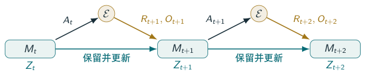
策略规定在决策时刻怎样选动作。对于离散动作， 是在行动前历史 下选择可行动作 的概率，各动作的概率之和为 1。由环境给出的 则规定执行该动作后的观测与奖励分布。给定起点、策略与环境，两者交替作用，决定整条轨迹的概率。若一个摘要 已保留决策所需的信息，策略可写成 。平稳策略在同一状态使用同一动作分布。
回报是把将来的奖励按给定准则合成的随机量。若准则是未来 个原始步的奖励总和，令 。即使策略固定，动作与环境反馈也可能随机。价值取这个随机回报的期望。以 为起点时， 表示从现在起按 行动的期望回报； 表示先指定动作 、余下各步按 行动的期望回报。由首步的动作分布， 是当下可行动作集。状态价值按策略对首动作取平均，动作价值则允许逐一比较可行的首动作。固定策略求这些量是策略评价；依据给定准则寻找更优策略是控制。学习期间策略也会改变，评价整个学习器时，后续回报须包括调整策略前后实际取得的奖励。Sutton 与 Barto，第二版，第 3 章
是剩余步数。第 3 章的折扣回报 不设步数上限，相当于 再乘上折扣；第 3 章 3.5 节的有限期价值就是这里 、 有限的情形。两者还有一层联系。设 lifetime 的长度随机，每步以 的概率结束；这时期望的全程奖励和等于折扣价值。所以折扣可以读成对 lifetime 长度的不确定，第 16 章 16.1 节再回到这件事。
仓库中设 为机器人在 、本趟亮右灯的历史，剩余 步：
| 首步 | 两步奖励 | |
|---|---|---|
| 向右（随灯） | 到 得 ，回仓得 | |
| 向左 | 进 得 ，绕到 得 |
两种首步之后都只有一个可行动作，所以这两个 值与后续策略无关。取向右 、向左 的随机策略，，是对两种结果按动作概率加权；一次实际运行只会得到 或 。这里不取左右各半，是因为那样的值 恰好等于下文不知灯义时直接猜的值，两个 来源不同：这里灯义已知、策略本身随机；下文灯义未知、动作确定，随机性来自世界。同一张表也给出两个确定性策略的值：总向左为 ，随灯为 。预测的对象不限于奖励：把累加的量换成两步内到达 的指示量，同样的条件期望就是到达概率，在这个策略下是 ；第 19 章把它换成任意的累积量。
历史上的 Bellman 最优性方程
历史 的最优价值 是剩余 步可得的最大期望奖励。设动作集合有限，世界先验 已知；反馈按后验预测分布 取期望。记 为在 之后接上 的历史，由 逆推：
仓库中取先验：灯的含义（指向或背向 ）两种各半。机器人在 ，尚不知本趟 在哪侧。
| 首步 | 下一步能用的信息 | ||
|---|---|---|---|
| 向左（或向右），得 或 | 走对得 ，走反得 | ||
| 询问调度，得 | 已知 的一侧，直达得 |
剩两步时询问更好，询问的净值为 ，询问花掉的一步已经扣除；只剩一步时询问一无所得，应直接猜。逆推先对每个可能反馈选最好的后续，再求平均；若把最大化放在观察以前，询问带来的信息就被平均掉了。
这个递推有现成的名字。把世界是哪一个当作一个看不见的变量，信念 随历史更新；把信念（或整段历史）并进状态，得到的决策过程叫贝叶斯自适应 MDP（BAMDP），上面的递推就是它的有限期 Bellman 方程， 叫对先验 的贝叶斯最优值（Duff，博士论文，2002；Ghavamzadeh、Mannor、Pineau 与 Tamar 的综述，2015）。本章没有发明新的方程，第 3 章的逆推照样用；新的地方是状态变成了整段历史，个数随历史长度指数增长。
它同时给出一个上界。学习器在可见历史上就是一个（可能随机、非平稳的）策略，所以任何学习器的全程回报都不超过从初始历史出发的最优值： 期望对初始观测取。仓库里逆推得 ，甲正好达到，乙得 ；，乙在 时也正好达到它，甲为 。这个上界允许保存全部历史、计算不受限制；大世界里它算不动，有限的学习器只能靠学，这是第三部分的出发点。所以逆推只作有限学习器的比较基准。Sutton 与 Barto，第一版，§3.8 · Subramanian 等，JMLR 2022
询问还是直接猜课件
把上面的逆推画成两棵树。
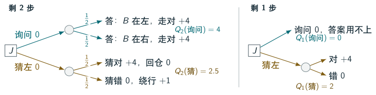
剩两步时，询问净多 ；这个净值已经扣掉询问花掉的一步。只剩一步时，询问用掉唯一的一步，答案来不及用，反而亏 。同一个问题值多少，取决于还剩几步来用答案；这是第 25 章探测的价值的最小例子。
逆推的顺序是：先在每个圆点处对世界的回答取平均，再在每个方块处取最好的选择。甲和乙的差别可以从这两棵树读出：甲在第一趟就付出询问的一步，此后每一趟都用上答案；乙前两趟直接猜，每趟猜错的期望损失累积起来，超过了一次询问的代价。从 开工、lifetime 只有 2 步时，答案用不上（15.3 节的 ）。
不同意见 这里把询问当作一个普通动作，询问的净值由逆推算出。有人认为这样低估了信息：真实世界里，答案还能用于别的任务、别的 lifetime，单一 lifetime 的逆推看不到这一部分。也有人认为这样高估了信息：真实的调度可能答错，询问也可能有延迟，而二叉树假设回答准确又即时。两种意见都指向同一点：询问的净值由模型给定，模型错了，算出的值也错。
学习器全程回报的前向评价
要比较两种更新规则，可以先在一个小世界里把它们各自的全程回报算清楚。这里有三个“”要分清： 是开场观测 的分布， 是开场记忆的初始化规则，两者都只管开场； 是世界的分布。算法 15.1 对一个固定的环境 运行，再按 平均。设环境和学习器的条件分布已知，有限期限内可能出现的观测、奖励、动作和记忆均只有有限多个值。评价者保留历史 以查询环境，学习器按它的记忆 作决定。以 记这一对历史与记忆在第 步出现的概率， 为开场观测的分布，初始化规则 为给定开场观测时的记忆分布。
算法 15.1 按原始步向前计算学习器的期望回报
输入开场观测分布 ν₀、初始化规则 ν_M、行为规则 b、环境核 p_ℰ、更新规则 U 与期限 T。
令 d₀(o,m) = ν₀(o) ν_M(m|o)，清零累计量 J。
对 t = 0,…,T−1，清空 dₜ₊₁：
对 dₜ(h,m) > 0 的每一项，枚举动作 a、到达反馈 (r,o) 及新记忆 m′。
w ← dₜ(h,m) b(a|m) p_ℰ(r,o|h,a) U(m′|m,a,r,o)
将 w 加到 dₜ₊₁(h 串接 (a,r,o), m′)，将 w r 加到 J。
返回 J。表要按历史和记忆两个自变量记。学习器只读记忆，评价者要用历史去查环境核。若更新规则 是确定的，记忆由历史唯一确定，按 记就够了； 带随机性时，同一段历史之后记忆可能有几种，必须分开记。表的行数随步数指数增长。仓库里每一趟的灯有左右两种，灯又是观测的一部分；所以 趟以后，单是灯的序列就有 种。历史至少有这么多条；各趟长短不一，实际更多。算法 15.1 因此只用来核对小例；大世界里表装不下，全程回报只能靠独立的完整 lifetime 取样估计，下文说明这样的样本为什么无偏，第 26 章讨论怎样在大量独立 lifetime 上评价学习器。
例 15.1 算法 15.1 在乙身上走三步。 乙的第一趟不询问， 处规则为总向左。每行是表 中的一个分支， 为分支概率。
| 分支末端（位置，指示） | 累计 | |||||
|---|---|---|---|---|---|---|
| 0 | ，左 / ，右 | / | 出发 | |||
| 1 | ，左 | 向左 | ||||
| 1 | ，右 | 向左 | ||||
| 2 | ，左 | 回仓 | ||||
| 2 | ，右 | 绕行 |
- ：出发一步在两个分支上都得 。（， 以外各因子为 ）
- ：只有亮左灯的分支交货。（ 在 选向左）
- ：亮右灯的分支在 得 。（绕行一步）
分支概率已经包含父节点的概率，所以每一步的奖励只按分支概率加一次。继续到 ，乙的期望全程回报为 ；甲为 ，且对任何指示序列都是 。乙在第 3 趟询问，前两趟各为 3 或 5 步，带新规则的分支最早在第 8 步之后出现。
三种递推课件
到这里出现了三种递推：第 3 章状态上的 Bellman 方程、上文历史上的 Bellman 方程、算法 15.1 的前向计算。把历史和记忆并进状态，第 3 章的递推照样成立；难处在于有限学习器算不动它。三者差在三处：在什么上递推，朝哪个方向算，对动作取最大还是按学习器加权。
| 状态上的 Bellman（第 3 章） | 历史上的 Bellman（15.2 节） | 前向计算（算法 15.1） | |
|---|---|---|---|
| 求什么 | 已知 MDP 的最优价值 | 世界未知时，剩 步的贝叶斯最优值 | 给定学习器的期望全程回报 |
| 在什么上递推 | 状态 | 历史 | 历史与记忆 |
| 方向 | 折扣不动点，与步数无关 | 从 向后逆推 | 从 向前推 |
| 动作 | 对 取最大 | 先对反馈平均，再对 取最大 | 按 加权，不取最大 |
| 要知道什么 | 转移与奖励 | 先验 ；保存完整历史，计算不限 | 学习器 与 |
| 结果的用处 | 最优策略 | 上界：任何学习器都超不过 | 这个学习器自己的成绩 |
| 仓库 | 灯的含义已知：随灯，每 步得 | ；剩两步：询问 ，猜 | ：甲 ，乙 |
历史上的 Bellman 与前向计算：前者对动作取最大，回答最好能得多少；后者把学习器固定下来，回答这个学习器得多少。
第 3 章的递推仍然成立：把历史和记忆并进状态，它照样适用，章首列出哪些结论要改写的表说的也是这一点。代价是这个状态随趟数成倍增长，仓库里每一趟的灯都有两种取值，有限的学习器无法在这样的状态上求值或求最优。所以本章把历史上的 Bellman 方程只作基准，把前向计算用来给具体的学习器打分。用仓库各算一次就能看出取最大与按 加权的区别：剩两步、灯义未知时，历史上的 Bellman 对询问与猜取最大，得 ；前向计算固定乙的规则，在转角按 总向左，期望两步得 。
第三列也可以写成逆推。记 为学习器 从历史 、记忆 起再走 步的期望奖励和，， 其中 、、 是这一步的奖励、延长后的历史和更新后的记忆。与历史上的 Bellman 方程相比，它把 换成按 加权，并多带一个记忆。对开场分布取期望，，与算法 15.1 的结果相同：前向计算按 推概率表，逆推按剩余步数推价值表，两者要访问的 一样多。
三列也可以读成同一套 Bellman 机制作用在三种对象上：已知世界的状态、未知世界的历史、给定学习器的历史与记忆。前两列问最好能得多少，第三列问这个学习器得多少。第三部分的难处由此说得出：最优值存在，但只有不受预算限制的学习器才达得到；在预算 允许的学习器集合 里取最大，没有现成的递推，因为学习器的记忆与计算本身受限，最优的有限学习器不能靠逆推得到。
不同意见 有人认为前向计算不过是在更大的状态上做策略评价。从计算上看确实如此；区别在于被评价的对象会改变自己，它的记忆也是被向前推的一部分。另一种意见认为，有用的是二者之间的近似：在线估计一次询问或一次探测值多少。这方面还没有一般的答案，第 25 章回到这个问题。
前向计算的回报与一次运行的关系
命题 15.1 算法 15.1 的输出恰为 。从同一初始分布按这些规则运行一条 lifetime，实际奖励和的期望也等于 。
- 初始表 是 的分布。（初始化规则的定义）
- 若 是 的分布，且学习器满足两条假设： 只看当前记忆 ， 只看 ，条件概率的乘法公式给出每条分支的联合概率 。（、、 依次条件化）
- 同一个 的各个来源互斥，概率相加即得 ；由归纳，每张表都正确。（历史含全部动作与反馈，分支不重叠）
- 第 轮加入的 等于 ；按时间相加得 。（期望的线性）
- 一次真实运行逐步抽取一个动作、一个反馈和一个新记忆，按相同概率选中一条完整路径；从初始分布独立重复 次， 个总回报的均值无偏，方差为单次的 。（各次运行独立同分布）
第 2 步的两条假设要求乘法公式里每个因子只依赖表里已经记下的量；环境核可以看整段历史 ，因为 本来就在表里。若学习器的行为或更新要读整段历史（例如保存全部经验再重放），就把历史并进记忆，令新记忆为 。这时两条假设重新成立，证明不必改动，代价只是表变大。若 或 还依赖表外的量，例如没有记进记忆的外部随机数，就要把那个量也加进记忆，否则第 2 步的乘法不成立。
起点决定上述估计针对哪个目标。设控制器须在第一步探测，支出 ，记住设备类型后每步得 。从初始状态工作两步得 。紧接着的两个原始步仍携带已学知识，得 。把这四步切成两段求均值，会把新手和熟练控制器的起点混在一起。实际运行中，按步累加奖励便可给这条 lifetime 计分。前向枚举的额外开销属于已知小模型的评价者。
易错 把一条 lifetime 切段求平均。甲的一条 16 步 lifetime 中，前 8 步得 ，后 8 步得 ，两段平均 ；而 。后一段从已经学会的记忆出发，不是从 抽取的初始记忆。估计 要用从初始记忆出发的独立 lifetime，或像算法 15.1 那样精确枚举。
15.3 lifetime、遗憾与其他评价量课件
15.2 节的算法 15.1 给出的 依赖 lifetime ，也依赖用什么单位计时。本节先看换一个 排序会不会变，再看奖励率的时间单位与全程回报的分解，并把这些记号对到前面各章的量上；然后说明本课为什么暂用 、还有哪些写法；最后读一项相关研究。第三部分共用的四区仓库实验放在章末的补充阅读。
15.2 节算出的数依赖 lifetime：同一对学习器，lifetime 不同，排序可以相反。下表用算法 15.1 对所有指示序列求期望。
| lifetime | 2 | 3 | 4 | 8 | 16 | 40 |
|---|---|---|---|---|---|---|
| (甲) | ||||||
| (乙) | ||||||
| 差 甲 − 乙 |
- ：甲用掉的一步来不及换回奖励，乙领先 。（同第 15.2 节 (询问)）
- ：甲的期望全程回报始终更高。（ 逐个枚举；此后两者在每个分支上都已随灯，差额按 3 步重复，所以对一切 成立）
- ：差额按 随趟次相位轮换，不再增长。（学会以后两者行为相同）
- 对两者相同。（随灯的奖励率）
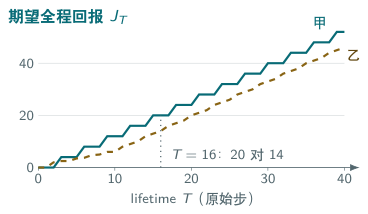
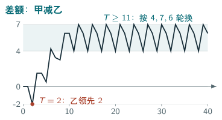
两张图画的是同一组数。甲是一条阶梯：它在第 2 步询问以后每 3 步交货一次， 每 3 步升 4。乙的期望是对所有指示序列的平均，前几步的台阶被拆成小台阶： 时已有一半的指示让它交货，期望为 2，甲这时还是 0。按 lifetime 的长短可以分三段读。lifetime 短时，甲用第 2 步询问，答案要到第 3 步才用上， 时这一步白花，乙领先；这与 15.2 节只剩一步时的结论相同，答案来不及使用，学习就不值得。lifetime 中等时，乙前两趟按总向左走，遇右灯就绕行，甲早已随灯，差额在前 10 步内攒起来；排序的交点落在 与 之间。lifetime 长时，两者都已随灯，每 3 步得 4，两条线平行；差额只取决于结算时刻落在一趟中的哪一步，甲每 3 步才交货一次，结算恰在甲交货之后差额就大一些，恰在交货之前就小一些，于是在 4、7、6 之间轮换。
第 1 条说明学习值不值得，取决于剩下的 lifetime；第 3、4 条说明 lifetime 趋于无穷时，全程回报随 近似线性增长，平均到每步又分不开两者，学习期的差别被平均掉了。比较学习器因此必须事先约定 lifetime；没有终点时需要别的比较量，第 16 章处理这种情形。
有限交互预算下的探索价值
例 15.2 试一次值不值。设采取 固定得 。采取 的奖励在开始时等概率为 或 ，随后保持不变。执行 得到的奖励能完全区分两种世界。若第一步试 ，以后按结果选较好的动作，与始终选 相比有 第一项是试探本步少得的奖励。第二项只在还能按反馈采取行动时出现，因此 宜选 ， 宜先试 。这里的先验和反馈规则都可以事先写进一个固定控制器。这个算例显示了信息对行动的价值；学习器自己提出新问题，不在这个算例之内。
这里的决策只要记住是否试过 、若已试过它的结果是什么。一般交互中，历史不断增长，有限记忆能保留哪些决策区别，取决于目标和动力学，第 18 章推导何时可以把历史上的价值写成状态的函数；第 16 章在此基础上引入长期奖励率。
原始步、技能时长与访问次数
lifetime 很长时，全程回报改比每步平均，也就是奖励率；奖励率要先说按步、按趟还是按决策来算。一段经验可以按三种钟计数：原始步、高层决策（一趟或一次询问算一次）、某个表项被更新的次数。前两种给奖励率定分母；第三种不计奖励，只决定步长怎样随访问缩小。下图九个原始步里，高层决策作了三次，依次持续 3、1、5 步，用的是仓库里的单位：一趟 3 步、一次询问 1 步、一趟 5 步；第 21 章把这种时长可变的决策单位叫技能，学习器在它的边界可以再选行为。一个指定表项只在第 1、4、9 步被访问。评价每步平均奖励，分母是九；比较一次高层决策的价值，须扣除它占用的原始步数；为表格预测选择局部步长，分母随这个表项的访问次数增长。每一步都收到一条经验，图中的实心方块只标出指定表项何时被访问，同一步仍可以更新其他预测或资格迹。
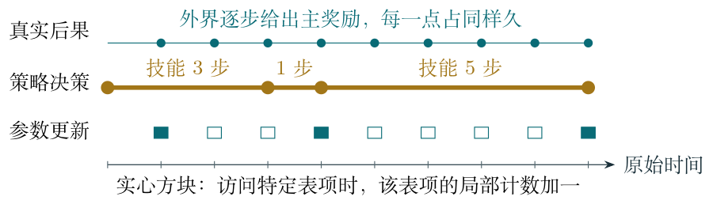
| 仓库里的规则 | 每趟得分 | 每趟步数 | 按趟 | 按步 |
|---|---|---|---|---|
| 总向左 | （平均） | |||
| 随灯 | ||||
| 每趟都询问 |
按趟计，总向左每趟平均得 、平均用 步，随灯每趟 步得 ；按原始步计，两者的率是 与 。第三行的规则每趟都先在转角询问一步再随灯，每趟也得 ，按趟算与随灯打平；它每趟多用一步，按步算只有 ，低于随灯的 。询问在学会之前有用，学会之后每趟都问就是浪费，只有按原始步计才看得出这份浪费。分母换了，排序就可能变，所以本章的 一律指原始步数，时长不等的技能留到第 21 章处理。若物理动作的持续时间也不等，各段应按实际持续时间给累计奖励定单位；实时还要求在下一次动作截止前完成所需计算。
第三种钟和前两种不同类。表项被更新的次数不出现在奖励率的分母里，它只影响步长怎样随访问次数缩小，例如按访问次数取 的步长。统计主奖励、管理技能和缩小步长是三个问题。
三种钟分别为后面三章预备：第 16 章的奖励率按原始步计，第 21 章的技能按自身时长计时，第 23 章的步长按访问次数调整。它们也说明了其他几章之间的关系。固定策略得到的平均奖励率是预测对象；按行为策略采样时，目标策略的率仍要从这些样本估计（第 16 章）。允许技能以后，比较的是占用不同时间的行为（第 21–22 章）。允许共享特征以后，对某个频繁状态的更新还会改变很少遇到的状态的预测（第 17 章）。评价一个会发现和练习技能的学习器，则要从第一步起保留它亲自获得的全部奖励（第 24 章）。决定目标、决定数据来源、决定参数更新方式，是三个可以独立改变的选择。Wan、Naik 与 Sutton，平均奖励下的学习与规划 · Yu、Wan 与 Sutton，异步随机逼近
全程回报的分解课件
lifetime 越长， 越大；比较两个学习器时，增长的部分对两者相同，有用的是差。把全程回报拆成三项，，可以看清差从哪里来：边界项在本例中三相平均为零，学得慢付出的部分是学习代价。三项都可以用一条参照台阶写出： 是最优的长期每步奖励乘以 lifetime，仓库例中 。 是知道灯的含义、从第一步起就随灯的机器人的全程回报，它在第 2、5、8……步交货，所以 。边界项 来自奖励每 3 步才来一次：这台机器人的累计是一条阶梯，围着直线 上下摆动，结算若恰在交货之后，它比直线多 ，恰在交货之前，就少 。拿 核对：、、，即 ，依次轮换，本例三相平均为零；一般问题里它由起点的差分价值决定。这一项只与起点和结算时刻有关，与学习器无关。学习代价 是学得慢损失的奖励。图里要分清两条参照线：斜直线是奖励均匀到来时的累计，台阶是真实随灯机器人的累计。
两项相加就是遗憾 。
| 的遗憾 | 随 lifetime 轮换 | 长期平均 | 学习代价从哪来 | |
|---|---|---|---|---|
| 甲 | 询问花掉一步，按 计正好值 | |||
| 乙 | 询问一步，加上前两趟总向左：一趟期望用 步、得 ，同样的 步按 本可得 ，每趟少 ；合计 |
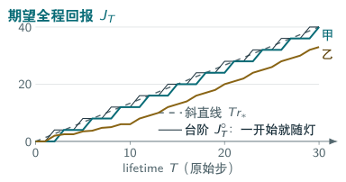
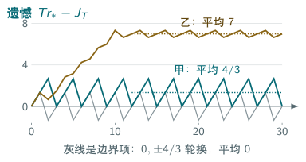
两个学习器的 相同，所以比较遗憾与比较 给出同样的排序： 时遗憾之差 ，正是 之差 。遗憾的好处是 lifetime 变长时不发散，甲、乙的差停在一个有界的范围里（ 起按 随相位轮换）。边界项在一般问题里由起始状态的差分价值决定，第 16 章给出它的计算方法；本例中它的长期平均恰好为零。第 24 章的性能差恒等式把这种分解推广到一般策略。
两个只在询问时刻上不同的学习器，谁更好要在同一段 lifetime 上比较，结论还随结算时刻 改变。上图是一条样本路径，每格一步，右端是到第 步的累计；指示左右交替、 时为 与 。下图是对所有灯序列求期望的 ，可切换为遗憾 ，灰色台阶是从头随灯的 。拖动 ，计算面板按 给出边界项与学习代价， 时遗憾为 与 。把乙改成不问即得总向左，。
不同意见 把 写成 减去遗憾，要先知道 ，也就要先知道世界。有人因此主张只报 或配对差，不报遗憾，因为 在大世界里算不出来。另一方认为理论能给出的结论是遗憾的上下界：许多在线学习的结果只对遗憾成立，不给出 本身。世界在变时， 也在变，要改用动态遗憾，比较对象换成随时间改变的最优策略，目标的其他写法列出了这种写法。
记号与前面的量
15.3 的每个记号都由前面的量换来：对象换成学习器，时间换成 lifetime。前面的量给固定策略、在已知世界里记分；这里的量给学习器、在一段 lifetime 上记分，世界按先验 平均。下表把记号逐一对上前面某一章的量，最后一列是仓库例取 时的值。
| 记号 | 读作 | 前面对应的量 | 仓库， |
|---|---|---|---|
| lifetime 步数（原始步） | 剩余步数（第 3 章 3.5 节）；轮数（第 2 章） | ||
| 对世界的先验 | 第 3–14 章世界给定；这里按 平均 | 灯指向、背向各半 | |
| 期望全程回报 | 固定策略时为 | 甲 ，乙 | |
| 每步平均 | 的极限是第 16 章的奖励率 | 甲 ，乙 | |
| 知道世界时最高奖励率 | 第 2 章的 ；第 16 章的最优奖励率 | ||
| 知道世界、从头最优 | 有限期最优值 （3.5 节） | ||
| 遗憾 | 第 2 章的 | 甲 ，乙 | |
| 边界项，本例三相平均为零 | 与第 16 章的差分价值同类 | ||
| 学习代价 | 固定策略时为价值差 | 甲 ，乙 |
表中 、 是第 3 章 3.5 节的有限期价值， 为剩余步数； 是一个可能的世界。数值由精确枚举求得。
第一组是计分本身。 是 lifetime 的步数，按原始步计；在第 3 章 3.5 节的有限期决策里，它对应剩余步数，在第 2 章的赌博机里对应轮数。 是对世界的先验：第 3–14 章世界给定，转移概率 已知或至少固定；这里学习器不知道自己处在哪个世界，所以要对可能的世界按 平均，仓库里两个世界是灯指向交货点和灯背向交货点，各占一半。 是期望全程回报；学习器是固定策略时，它退回各个世界有限期价值的平均，即 15.1 节全程回报与前面的回报里的公式。 是每步平均， 趋于无穷时的极限就是第 16 章的奖励率。 是知道世界时能达到的最高奖励率，与第 2 章赌博机里最好的一只臂的均值 同一个角色；仓库里随灯每 3 步得 4，。 是知道世界、一开始就随灯的全程回报，也就是第 3 章的有限期最优值，仓库里为 ， 时为 20。
第二组是分解。遗憾 与第 2 章的伪遗憾写法相同，只把 换成 。它分成两项。边界项 是最优策略也躲不掉的差，来自 lifetime 结束在一趟中间，本例三相平均为零。一般问题里，边界项由起点的差分价值决定，与第 16 章的差分价值是同一类量。学习代价 是学得慢少拿的部分。学习器是固定策略时，学习代价就是有限期价值差 ，第 3、4 章的方法就能算。表中间三行合起来就是上一小节的分解：遗憾 边界项 学习代价。
表外还有一个量：权重 。第 3 章的折扣 可以读成 lifetime 以几何分布随机结束：第 步还活着的概率是 ，于是期望全程回报就是折扣回报；全程回报取 ，前 步同等计入。推导见下文为什么暂用 。
字母上有一处要分清：仓库的交货点记作 ；后文持续学习的一种定义（Abel 等）里的 是行为基，下标 与交货点无关。预算记作 ，学习器集合记作 。
小例：三个学习器的遗憾课件
固定策略也能放进同一个分解：它的学习代价就是第 3 章的价值差。取 ，看三个学习器：甲第 1 趟询问，乙第 3 趟询问，第三个是总向左，它从不询问、从不改写规则，是一个固定策略。每个学习器的三项加起来都是 ，也就是知道世界、按最高奖励率一直拿下去的分数。
| 学习器 | 全程回报 | 学习代价 | 边界项 |
|---|---|---|---|
| 甲 | |||
| 乙 | |||
| 总向左（固定策略） |
数值由精确枚举求得；遗憾是后两列之和。
总向左的全程回报 约为 10.3。它每趟有一半机会顺路，3 步得 4；另一半绕行，5 步得 1；16 步里能走几趟取决于前面的指示，所以期望不是整数。学习代价一列以知道世界、一开始就随灯的学习器为参照，它在 16 步里得 20。甲也得 20，学习代价为零：甲用来询问的那一步恰好被一趟的结算时刻吸收。乙为 6；总向左为 ，约 9.7。边界项 ：即使一开始就随灯，第 16 步也落在一趟的中间，最后一次交货还没完成，按奖励率计的分数比实际多出 。
边界项对三者相同，因为它只取决于世界和 ，与学习器无关。所以三种排序一致：按遗憾从小到大、按学习代价从小到大、按全程回报从大到小，都是甲、乙、总向左。这与第 2 章最小化伪遗憾等于最大化总奖励这一结论是同一个道理：比较项对所有候选相同，相减时抵消。
总向左是固定策略，它的全程回报就是第 3 章 3.5 节的有限期价值 ；随灯是知道世界时的最优策略，全程回报是 。所以固定策略的学习代价就是有限期价值差，第 3、4 章的工具就能算出。会学习的甲、乙没有这样的现成公式，要用 15.2 节的算法 15.1 在历史上算。
为什么暂用
看一个目标的办法，是问它给第 步的奖励多大权重 ，目标等于 。全程回报给前 步的权重都是 ，之后为 ，是一个方盒。折扣回报的权重按 衰减，越早的奖励越重要。长期平均奖励把 lifetime 推到无穷再除以 lifetime，任何有限一段的权重都趋于 。
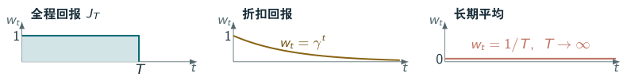
由此读出 满足的两条。第一，计入学习代价：学习发生在 lifetime 的前段，前段的权重与后段相同，询问、走错、绕行都算分；长期平均正好相反，学习期无论多长，只要有限，都被平均掉，甲、乙的长期平均都是 。第二，能做配对比较：同一世界分布、同一 lifetime 下，两个学习器的 都是有限的数，差也是；让两者在同一组指示序列上运行，偶然因素对两者的影响大部分相互抵消，单条 lifetime 的差（）就是期望差 的一个低方差估计。
代价是 lifetime 要事先说定： 和 时排序相反。lifetime 不知道时有两种做法。一是报一整条 曲线，让读者自己选 lifetime。二是对 lifetime 取一个分布再平均：若 lifetime 服从几何分布，每一步以 的概率结束，即 ，且 lifetime 与经历独立，则 正好是折扣回报。这给了折扣一个解释：折扣率表达的是对 lifetime 的不确定。
推导 只有一步。写 ，两边对 和经历一起取期望；lifetime 与经历独立时，；奖励有界时可以交换期望与求和的次序，得到 。几何分布下 ，于是对 lifetime 平均的全程回报等于折扣回报的期望。若 lifetime 的结束与经历有关，例如机器人走错就更容易被关机，独立性不成立，这个等价也就不成立。
下一小节的评价量对照按这三张权重图来读。
长期平均与全程回报：前者看学完以后，学习期权重为零；后者从第一步起计分，学习期与之后同权。
不同意见 有人认为 lifetime 不该由研究者定。在这种看法里，持续学习的智能体只有一条不结束的经验流，任何有限的 都是人为截断，所以应当直接比较长期平均或遗憾的增长速度。另一方认为真实的系统都有部署期限和预算，有限的 符合这一事实；长期平均不计学习期的代价。本课暂用 ，并保留下面的其他写法。
评价量的对照课件
按上一小节的权重图读，本章出现的六个评价量差在四处：谁生成轨迹、计哪几步、取期望还是单次、是否减基准或取最大。其中五个是奖励的加权和。设 lifetime 为 16 步，前几步是学习期，其余是学会以后：甲在第 2 步询问，学习期很短；乙前两趟不读灯，学习期大约 8 步。冻结测试与全程回报都取 ，单条 lifetime 的指示依次为左、右、左、右……
| 评价量 | 评价对象 | 权重落在哪里 | 计入学习代价 | 甲 | 乙 | 看不见的 |
|---|---|---|---|---|---|---|
| 冻结测试回报 | 学完后的规则 | lifetime 内全为 ；停止更新后另跑的 步每步 | 否 | 学习期的代价 | ||
| 奖励率 | 学完后的规则 | 另跑的每步 ，再令 | 否 | 同上 | ||
| 期望全程回报 | 学习器 | lifetime 前 步每步 ，对指示取期望 | 是 | lifetime 之外 | ||
| 单条 lifetime 累计奖励 | 学习器 的一次运行 | 同上，只看一条指示序列 | 是 | 指示带来的方差 | ||
| 遗憾 | 学习器 对最优长期率 | 同 ，再减去对两者相同的 | 是 | 边界项随结算时刻轮换 | ||
| 历史最优值 | 比较基准 | 不是加权和：对动作取最大 | 作基准 | 询问 | 猜一侧 | 有限学习器能否达到 |
前两行评价学完之后的规则。冻结测试回报在停止更新以后另跑 步，lifetime 里的 16 步一步也不计，权重全在另跑的那一段；奖励率给另跑的每一步权重 ，再令 趋于无穷。甲和乙最终都随灯，所以这两行的数相同，学习期花掉的步数不出现在表里。
中间三行给 lifetime 的 16 步同样的权重 1，学习期与学会以后同权，于是分出 、、 的差。期望全程回报是本章的目标量，评价对象是学习器本身，由算法 15.1 精确计算，或用许多条独立 lifetime 估计。单条 lifetime 的累计奖励权重相同，差在只看一次运行：指示固定为左右交替时甲 20、乙 13；它围绕期望波动，所以比较两个学习器要么配对同一指示序列，要么重复许多次独立 lifetime。遗憾在同样的权重上再减去对两者相同的 ，16 步时甲 、乙 ，两者之差仍是 6，所以遗憾与 排序相同；它在 lifetime 变长时不发散，全程回报的分解把它拆成边界项与学习代价。
最后一行是历史上的最优值。它对动作取最大，是一个基准，与哪个学习器都无关：剩两步时询问值 4，猜一侧 2.5。它允许保存完整历史、不限计算，有限学习器未必能达到。表的最后一列是每个量看不见的部分；选哪一个，要看问题关心学完以后的表现，还是学习过程本身。按权重归类是本课的整理。
不同意见 有人认为冻结测试仍有必要：部署前的验收只能看学完后的规则，全程回报要等整段 lifetime 结束才知道，来不及用于决策。另一方回答，冻结测试可以作为全程评价中的一个检查点，两者不冲突；但只报冻结测试时，学习期的代价就看不见了。
目标的其他写法课件
常见写法多半只改三样之一：时间上的权重、比较的基准、对随机性的汇总。记一条 lifetime 的累计奖励为 。 在三处各取最简单的一种：前 步权重都是 1，不减任何基准，对随机性取期望。其他写法各改其中一处，按改哪一处分成三组，就能看清它们与 的关系。
| 改哪一处 | 写法 | 仓库， |
|---|---|---|
| ① 时间上的权重 | 平均奖励、折扣回报、有限期 | 全程回报甲 、乙 ；平均奖励两者都是 |
| ② 比较的基准 | 遗憾 ；基准随世界变化时为动态遗憾 | 遗憾甲 、乙 ，差仍是 |
| ③ 对随机性的汇总 | 下尾 CVaR；带约束、多目标、开放式目标也属这一组 | 乙得 的概率为 ； 时 CVaR 甲 、乙 |
第一组改时间上的权重，为什么暂用 一节已经画出三种权重。平均奖励是第 16 章的主角，写成 在 时的下极限 ，取下极限是为了极限不存在时也有定义。它适合持续运行、世界平稳的情形，但它对任何有限一段的权重都趋于零：仓库里甲、乙的平均奖励都是 ，16 步的全程回报却是 20 对 14；世界在变时，平均值本身也在漂移。折扣回报是第 3–14 章的默认写法，等于对几何分布的 lifetime 取平均； 本身会改变最优策略， 趋于 1 时的极限与平均奖励相连。有限期写法每次只看后面 步，适合工班这样有自然期限的任务，持续世界里找不到这样的 。
第二组改比较的基准。遗憾拿最优的长期每步奖励乘 ，减去学习器的全程回报。 对所有学习器相同，所以遗憾与 排序相同。它的好处是理论上可以给出上下界，lifetime 变长时也不发散；代价是要先说清比较对象。世界在变时比较对象也要随时间变，这叫动态遗憾，已知的下界依赖世界变化的总量（见下文的形式化比较）。
第三组改对随机性或多个信号的汇总方式。代表是下尾 CVaR：平均最差 比例的 lifetime 的回报，适合一次失败代价极大的场合。仓库里，16 步的 lifetime 中甲不论灯怎样亮都得 20；乙前两趟不读灯，得分取决于前两趟交货点在哪一侧：两趟都在左得 20，一左一右得 13，两趟都在右得 10，概率依次是 1/4、1/2、1/4，期望正是 14。取 ，乙的 CVaR 是 10，甲仍是 20，乙的学习期代价集中落在少数倒霉的 lifetime 里。CVaR 不满足逐步的 Bellman 分解，要把累计回报放进状态。同组的还有：带约束的写法把安全、能耗写成上限，例如 （第 14 章），要先给出可行集，最优策略可能要随机化，阈值也要有人给；多目标写法承认几个目标换算不成同一单位，于是没有单一的最优，只有一组互不占优的策略，还要给出它们之间的取舍；开放式目标让智能体自己不断提出目标，最难比较，也最容易退化成自定的指标，第 23 章和第 25 章讨论这种退化。
怎样选 先看学习期是否计分，这由第一组的权重决定；再看能否在同一组 lifetime 上配对比较，第二、三组的量都可以。两条都满足，第 24 章的部件组合、第 25 章的探测与练习、第 26 章的基准都能直接使用；不满足的写法仍可能是对的，只是要另找检验的办法。
不同意见 有人认为单一标量的写法都不够。在这种看法里，真实的目标有多个、会变化，甚至在运行中形成，所以持续学习应以开放式目标为准。也有人认为只有遗憾的写法是严格的，其余写法都依赖人为选定的 、 或阈值。本课暂用 ，后面各章遇到其他写法时再说明各自的代价。
学习器的参照与评价起点
一辆车已经开进支路。问进这条路值不值，要从岔口比较两条路线各自会遇到什么。问到了这里还能做得更好吗，要保留它进了支路这一事实，再比较能采取的行动。即使沿用同一个逐步奖励，这两问所需的经验也不同。下表中， 是会随经验改变行动的完整学习器， 是它在前 个原始步中实际获得的期望每步奖励。
| 要回答的问题 | 从哪里起算，允许谁来比较 | 评价量 |
|---|---|---|
| 有限期限内的累计奖励 | 从共同起点，各学习器用自己的动作产生整段历史 | ，固定 时除以 不改变排序 |
| 每步计算受限的长期平均奖励 | 从初始化一直运行，每个候选学习器遵守同一每步预算 | 最大化 |
| 相对于给定参照的回报差距 | 说明参照掌握的信息，或说明用于求参照奖励率的环境 | 参照回报减 ，除以 得每步差额 |
| 在已访问历史上的行为改善空间 | 保留实际到达的历史，对每段历史比较原规则和同一项行为修改 | 各起点的条件回报差取平均 |
| 知识对后续任务的迁移价值 | 给定测试起点、新奖励，以及测试时允许的规划或再学习预算 | 测试回报，或相对于各测试任务最优值的差额 |
还可以改变各步的权重。如果第一步一定执行，以后每步都以概率 独立地继续，则截止时的期望总回报为 。奖励有界时，乘以 便得到权重之和为 的加权平均。固定 时这项归一化不改变排序，改变 却会改变一次勘察还有多少时间收回成本。
给评价换一个起点，就换了评价对象。假如两条支路一经选择就不能掉头，只在已经驶入的支路上比较行为，会漏掉最初选错路的代价。同样，把智能体带回公共起点、冻结学习参数再测技能，只能说明已经练成的能力。有限期的全程回报则从练习之前起算。
不同参照者、遗憾与未来任务的形式化比较
全程回报与参照回报。 回到有限 lifetime 的 。若世界 从已知先验 抽取，所有行动者只从自身反馈了解它，则同等信息、同等资源下可得的最优值是 。在环境状态可观测、转移模型未知的 MDP 中，贝叶斯自适应控制可以把对未知模型的后验连同当前状态作为规划状态。试探会改变后验，也会用掉一次行动机会。如果先把真实 告诉参照者，其最优值为 ，其中 表示固定世界的期望回报。后一种参照可以针对每个 选择不同的规则。因此 。用它减去某学习器的回报，同时计入了预先知道世界的好处和该学习器距同条件最优的差额。Duff，有限期贝叶斯自适应控制
无限时域下的有限计算预算。 Kumar、Van Roy 等把每步计算限制施加给完整学习器，用上表第二行的奖励率评价它。有限次勘察本身的成本在极限中消失，若每隔一段时间都须勘察，这项经常性成本会保留。作者另用知晓某个学习目标 的参照策略评价知识的价值。例如， 只揭示哪条路线通常较快，无须揭示整个世界。给定 的参照策略与学习器各自从头行动，比较两者在有限期内的每步期望奖励差。不同的 可以解释不同知识的价值。Kumar 等，2025 年版，式 (1)、(2)、(10)
另一种做法是固定世界 和参照策略类 ，用这些策略的长期奖励率 衡量学习器。Dong、Van Roy 与 Zhou 给出的累计遗憾为 。这里 按长期率折算，可能与 自己前 步取得的回报不同。他们用奖励平均时间 刻画这种差异。从任一历史出发再执行 共 步，若其期望每步奖励与 的绝对差均不超过 ，满足此界的最小 就是 ，也允许取无穷。只同 较小的策略比较，所需的评价窗口也较短。Dong 等，2022，式 (1)–(4)
若世界的奖励和转移规律随外部时间改变，Cheung 等在每一步冻结当时的环境核，求出该平稳 MDP 的最优率 ，以 定义动态遗憾。他们假定每个冻结 MDP 的任意两状态间都存在期望到达时间有限的策略，并以预算限制奖励与转移的总变化。这些最优率分别属于不同的假想平稳世界，一条真实路线未必能依次取得它们。Cheung 等，2020，式 (1)–(2) 与注 1
沿实际历史考察改进机会。 Elelimy、Szepesvari、White 与 Bowling 让学习规则 在每段历史上选择一项策略。给定一项系统的行为修改 ，例如把到转角后总向左的决策改为向右。记 为从历史 出发、继续按 行动所得的 步期望折扣回报，第一步权重为 ，以后逐步乘 。 在随后每步都先按该分支的新历史选出策略，再施加修改。偏离遗憾（deviation regret）定义为 每个 来自原学习器实际走过的同一次 lifetime，所以这个平均仍随轨迹而变。正值表示由这些起点出发，同一项修改平均有利。 数起点， 数每次向前看多少步，相邻窗口可以重叠。其中的反事实回报通常无法直接读出。原文对固定有限 给出一致估计的一项充分条件，即每一步各动作的选择概率均有统一正下界；用单条轨迹做重要性采样估计时，还要能取得相应的行为概率。Elelimy 等，式 (1)、附录式 (3) 与定理 1
设想岔口只出现一次。首次选左、右都得 ，以后在左支无论如何都得 ，在右支无论如何都得 ，两支不再相通。走左的学习器从起点算比走右的少得 。若 只在岔口把向左改为向右，实际经历的 个起点中，只有 还允许改道。固定 并取 ，上式恰为 。随着 增长，全程每步损失趋于 ，偏离遗憾却趋于 。后一个数准确描述了这项修改在车已到达的地方还有多少机会。如果要评价一次不可逆的早期决策，就必须保留它对后续访问的影响。
未知奖励函数下的迁移。 若工作是为尚未公布的奖励收集经验，可以在探索期结束后才给出测试奖励。Jin 等研究可重复开始的有限期 MDP，探索期只采集转移，随后给出奖励函数 ，不再允许和环境交互。目标是让所得策略 对约定的每个 ，都在共同起点分布下达到 以内的价值差，并计算达到这项保证需要多少探索回合。这样的数据覆盖可能比提高眼前奖励更广。在本章只给一条持续计分的工作 lifetime 时，扩大覆盖所放弃的奖励要计入 。把奖励函数换成一族未来目标，还要交代谁提供目标、哪些目标会被调用。Jin 等，学习协议与定理 3.1 · 目标与值得获得的知识
这些准则都可用于比较学习器。Bowling 等的奖励表示定理先问对历史的偏好何时能写成逐步奖励。Abel、Barreto、Van Roy 等则给定表现准则和行为基底，问所有最优学习器是否都永不到达这一基底，定义见本节后文“持续学习的一种定义”。到达与否取决于所有可达延续，一次有限 lifetime 的高回报或低遗憾都不足以判定。三种持续学习的研究命题 · Bowling 等，2023，定理 4.1 · Abel 等，2023，定义 3.5、4.1、4.2
持续学习的一种定义课件
环境不终止，不等于必须一直学；要看最优规则是否已在行为基里。Abel 等在 NeurIPS 2023 的 A Definition of Continual Reinforcement Learning 里把环境、表现准则、非空的最优智能体集和能生成候选集的行为基一起给定。“能生成”指候选在各可达历史上的选择，可以由一个依赖历史的规则选择器从基中给出。
定义 15.2（持续强化学习问题，Abel 等 2023）
| 项目 | 内容 |
|---|---|
| 设定 | 给定一个环境、表现准则和行为基 ：基中每条规则把历史映为动作分布，能生成全部候选智能体 |
| 判据 | 智能体 在可实现前缀 之后永久采用 ，指对每个可实现后缀 有 。若每个最优智能体都找不到这样的 ，问题称为持续强化学习问题 |
判据中的等式要求一段前缀之后的所有可实现后续都与同一条基础规则一致；单条采样路径恰好给出相同动作，不足以满足它。原文以定义和定理为主；唯一的实验是切换 MDP 上两种 Q 学习的对照，只给曲线，没有数值表。判据可以画在历史轴上读。一种情形是智能体的规则在前缀 之前与基中各规则都不同，从 起与 重合，两条线并成一条；只要有一个最优智能体能这样合并，问题就不算持续。另一种情形是最优智能体在基中两条规则之间不停切换，任何前缀之后都不与同一条规则永久重合；所有最优智能体都如此时，问题是持续的。
这个定义改变的看法是：环境持续运行，与最优行为是否需要持续适应，是两个问题。环境不重置，本身不要求一直学；最优规则若已在 里，取空前缀即永久采用它，问题就不满足该持续定义。这个定义判别的是问题，回答给定行为基时最优智能体是否永不停止搜索，它不用来给两个智能体排序。它与大世界假设相连。世界比智能体大得多时，容量有限的行为基可能装不下最优规则；原文指出持续问题中基内没有最优规则、最优智能体须无限切换，并把基的受限联系到计算与记忆预算。装不下最优规则本身还不足以推出问题是持续的。
仓库例中要分清固定世界与世界先验。固定 （灯指向交货点），取行为基 总向左，随灯，随灯在基内，从起点开始就是最优，所以问题不是持续的。在本章的 下，灯指向还是背向交货点各占一半，机器人不知道灯义，随灯就不是从起点最优，要先询问。甲和乙都要先学会灯义，这一段学习期的差别，这个定义不计分，也不打算计分；本章用有限 lifetime 的全程回报给它计分，16 步时甲 20、乙 14。三种评价不必对同一学习器给出同一排序：冻结测试看最终规则，奖励率看极限，全程回报看整段 lifetime。Abel 等，A Definition of Continual Reinforcement Learning，NeurIPS 2023，定义 3.4–3.6、4.2
实验：切换的 MDP。 规则无预告地不断切换时，步长不变的 Q 学习跟得上，退火的越来越落后。同一篇文章用一个实验说明这一点。 个 MDP 轮流出现，每一步以 的概率切换，智能体看不到当前是哪一个，世界也不复位，按平均奖励评价；lifetime 为 步时，全程平均奖励就是 ，所以这个实验比较的正是本章评价量除以步数。比较两种 的 Q 学习：一种步长恒为 ，一种步长逐步退火。原文图 2(b) 显示步长恒定的一种胜出；正文没有给出精确数值，这里只引趋势。仓库里学会一次灯的含义，行为就可以固定；这里规则一直在变，固定下来的行为迟早过时。
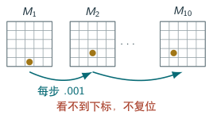
原文的环境取自 Luketina 等，下图是本课仿照的版本： 的网格，每个 MDP 一个目标格，走进得 ，随即被放到一个随机格；退火写成 ，也由本课取定。共 次运行，每次 万步，约切换 次。
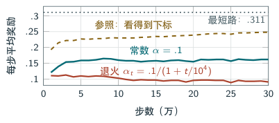
红线起初与青线相近，因为前一两万步两者的步长差不多；之后退火的步长越来越小，到 万步时约为 ，表里留着旧目标的价值，切换以后改不过来，平均奖励从 慢慢降到 。青线保持在 左右，每次切换后重新学新目标。金色参照切换回来时不用重学，约 ；探索率 的学习器到不了 。全程平均奖励 ：常数步长 ，退火 ；逐次配对相减的差为 ， 次全为正。
下面是本课的整理。按 Abel 等的定义，退火到零等于在某一刻永久采用一条规则；在会切换的环境里，这样的智能体都不是最优的，所以这个问题是持续的。实验也说明本章为什么用全程回报：两种学习器在任何一刻冻结下来都不算好，差别在整段 lifetime 的平均奖励里。仓库里学习期的差别只发生在开头；这里学习期贯穿整个 lifetime。局限有两点：底层只有 个固定的 MDP，会反复出现，存下旧知识比一直重学更好，金色虚线就是证据，真实世界的变化不一定重复；网格很小，表格学习就够了。
不同意见 有人认为退火本身没有错：配上变化检测，检测到切换就把步长调大，同样能跟上，甚至更好。这样的学习器按 Abel 等的定义也在持续换规则，与常数步长同属持续学习，只是做法不同。还有人认为这里的非平稳来自看不到下标，把下标交给智能体，问题就退回到 个普通的 MDP。本章的回应是：智能体看到的总是世界的一部分，看不到的东西一变，从智能体这边看就是非平稳。
常数步长胜过退火，第 23 章接着讨论这件事：那里让学习器按误差自己调步长，既能在世界不变时收小，又能在切换后放大。章末补充阅读的四区仓库也让规律随机切换。这里 10 个 MDP 随机切换、看不到下标；那里规律平均每千步一换，第 16–26 章都在它上面比较学习器。
同一题目下还有另外两项研究命题，也各自回答不同的问题。
偏好的逐步奖励表示。 Bowling、Martin、Abel 与 Dabney 从对有限历史彩票的偏好出发。在论文的设定中，前提是四项期望效用公理及第五项时间 -无差异公理。这些公理等价于存在逐转移奖励 和折扣 ，使历史效用满足 、空历史效用为零，彩票效用为其期望。这里 是一项转移， 是其后历史。在两段后续历史前面接上同一转移，两者的效用差按这个转移规定的因子缩放。选择 已经指定了有限期无折扣计分，还须说明实际能测到哪项奖励。Bowling 等，定理 4.1
普通经验中的知识构造。 Alberta Plan 把有限计算、普通感觉—动作经验和时间上的一致待遇作为研究取向，提出逐步构造状态、预测、技能与模型的路线。这是一组算法问题。给定子目标能否学会技能，与在同一段 lifetime 里能否自己提出值得练的子目标，需要不同的实验。在后一项实验里，练习和放弃练习的后果都由该行动者承担。Sutton、Bowling 与 Pilarski，Alberta Plan
在两臂算例中，第一次试探得到的奖励已经足以决定以后选哪个动作，保存这项奖励便可省去其余历史。送货机器人走到同一路口时，上次服务的是哪个站却可能改变下一站的收入。因此，某一历史摘要能否用作状态，要由该摘要下各动作的后果来判定。
延伸：冻结后的测试起点、三站任务的轨迹与含噪探测
两辆配送车从同一仓库出发，起初都只知道近线入口，比较窗口同为五步。近线配送一步得 。实地勘察占一步，奖励为 ，回到仓库时获得远线入口信息。远线配送用两步，去程得 ，送达回仓得 。两车面对相同且固定的路况，在不同时间勘察。
| 学习者 | 第一步 | 第二步 | 第三步 | 第四步 | 第五步 | 五步总奖励 |
|---|---|---|---|---|---|---|
| 甲先勘察 | 勘察 −1 | 远线去程 0 | 送达 +3 | 远线去程 0 | 送达 +3 | 5 |
| 乙先送两趟近线 | 送近线 +1 | 送近线 +1 | 勘察 −1 | 远线去程 0 | 送达 +3 | 4 |
第五步结束，两车都在仓库，也都已获知远线入口。固定末次策略，从同一仓库另测两步，两车都走远线，都得 。相同的测试回报反映了相同的末次策略。学习期间，甲比乙早两步完成勘察，五步总奖励高 。
在这个确定性例子里，五步总奖励 和 就是各自的 。如果路况或动作随机，先对每次独立运行的五步奖励求和，再将各次的和取平均来估计 。五步总奖励除以五，得到这个工作期内的每步平均奖励，甲为 、乙为 。若从现在起一直走远线，两车都每两步得 ，固定策略的长期每步率为 。温颖，持续控制与平均奖励
若在第 步冻结策略，另测未来 步，就需要指定测试从哪里开始。记 为冻结策略从 出发再行动 步的期望累计奖励。固定共同起点分布 时，两份完全相同的策略有相同的 。若分别从两个学习器实际到达的位置继续，则比较的是 与 。对于有记忆的策略，这里的起点也要包括初始执行记忆，后续行动时仍须更新它。
例如，两辆配送车从同一仓库出发，沿途还可接单。前三步甲收到 并停在距卸货口三格处，乙收到 并停在距口一格处。此时两车都已学会每步向卸货口走一格，到口后等待。沿这条路线进卸货口得 4，其余移动和等待都得 0。冻结后从共同的两格处测试两步，两车都得 。从各自停车处继续两步，甲得 ，乙得 。前三步的学习成绩则是甲 5、乙 1。若工作合同总共五步，且规定后两步原地接续、冻结学习，则两车累计都得 5。独立测试所得的奖励不计入部署期间的累积奖励。
在第 24 章的三站实验中，每个学习者经历 120,000 个原始步。完成前 60,000 步后，C 站奖励从 3 降至 0.1。此后，一组继续更新参数，另一组冻结学习，两组各独立重复 8 次。图中对照实际行动所得的奖励和末次策略在新奖励规则下的稳态表现。
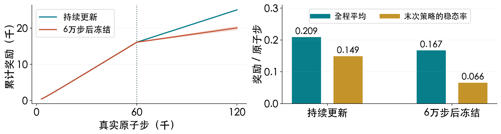
左图每条曲线从初始化开始计入全部奖励，阴影为 8 次重复均值的标准误；右图金色柱先冻结末次学习参数，再由已知环境求含探索策略在末阶段的稳态率，只供评价。持续更新组全程平均率为 0.208758，末次策略率为 0.149052；冻结组分别为 0.167127 和 0.065767。早期 C 站奖励较高，所以全程平均可能高于当前策略率。这些数值来自同一条轨迹，估计的量各不相同。冻结学习时仍须推进位置、循环状态与活跃技能等执行记忆，才能正常行动。
持续学习的评价还取决于经验访问与重置条件。若学习器能无限保存并反复训练旧经验，它面对的记忆问题与只能保存固定数量统计量的学习器不同。若旧任务可随时重开，它可以主动复习；若智能体只能沿一次不能重置的交互持续行动，过去的状态未必可再次访问。流式约束规定每次新经验到来时允许多少计算、多少记忆和怎样的旧数据访问，严格流式的定义见流式条件与动作期限。持续任务描述交互没有自然终点。持续学习描述知识与学习过程在经验到来后仍持续更新。这些条件可以组合，不能只从其中一个名称推断其他条件。MDP 规定环境对动作的条件响应，学习规则规定反馈如何改变学习者，评价准则规定比较哪段行为。Abel 等（2023）的定义 4.1、4.2 见三种研究命题；这里的配送算例只按指定工作期比较两种学习规则。
同一经验流可以检验不同的命题。 若规律固定、近期经验有时间相关性，固定存储与每步计算，比较继续跟踪和冻结后的实际回报，可以检验有限容量下更新知识的用处。若由外界改变奖励，如三站任务的 C 站降奖，就能在相同变化下比较恢复速度；是否给出变化时刻，又影响谁承担检测变化的工作。若关心已到达某处后是否错过改进，则从学习器实际到达的各段历史比较原行为与指定改动的后续期望回报；这与让两个学习器各自从起点行动、比较全程回报回答不同的问题。这些有限比较都可以揭示改进机会；要断言所有最优智能体必须永远学习，还须就给定基底分析其所有可达延续。温颖，持续强化学习的不同研究观点 · Javed 与 Sutton，大世界假设与时间相关性 · Cheung 等，外部变化预算 · Elelimy 等，偏离遗憾
持续运行、持续学习与最优行为
在平稳有限 MDP 中，一个已知的最优策略可以一直运行。也可以设计一个每步改变参数、行动分布却始终相同的学习器。只观察运行时长或参数更新次数，区分不了这两者的行为。要判定后续学习的用处，可以比较继续更新与冻结知识以后，从各自实际行动中取得的奖励。
评价准则也影响最优的含义。沿用前文最初 步得 0 的例子，在任何 的观察窗口中两者总奖励相差 ，极限平均奖励却同为 1。若实际问题关心最初的适应代价，有限时窗的比较能把它保留下来。只有约定了控制目标、准许的比较者和可以使用的经验，后面的价值更新才有明确的解释。
固定环境中的持续学习
前文“行为规则与更新规则”一节已给出 构成时齐马尔可夫过程的条件。其中 须保留会改变后续更新的全部量：相同权重、不同资格迹或不同步长的学习器，会对同一反馈产生不同反应。环境核没有改变，并不意味着智能体策略固定；策略依赖不断变化的 。
这一扩展说明形式上的一致性，却没有自动给出容易求解的问题。完整学习器状态可以包含百万个参数与统计量，环境状态又可能不可观察。把所有量列入状态，不能替代对可学习内部摘要、近似算法和资源限制的研究。固定策略和充分状态下的关系提供分析起点；策略学习与状态构建分别改变预测对象和信息条件。
两种探测时机的数值计算
沿用“有限交互预算下的探索价值”中的两臂设定，记 的奖励为 。学习器知道这个设定，要亲自试过 才知道本次取哪个值。预算为 次真实动作，从第一步起计分。
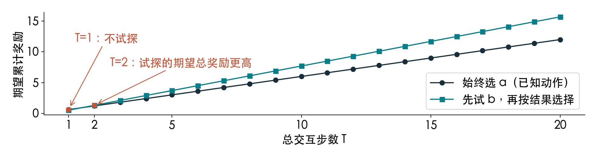
图 15.1 两条线从同一个先验出发，横轴是本次运行可用的全部步数，纵轴是从第一步起的期望累计奖励。 时始终选 较高， 起先试 反超，与上文 的符号一致。
沿用这两个动作，把 改成以固定的隐藏成功率独立地给出 ，否则给 。成功率为 或 ，先验各半。第一次成功后，高成功率的后验概率升到 ，下次选 的期望奖励为 ；若只剩一步，仍应选 。从初始先验出发，总预算达到 10 步才首次值得先试；若成功率每一步都独立重抽，旧反馈对下次选择就没有预测作用。要算出这个门槛，记 为高类型的后验概率，。还可行动 步时，令 ，然后逐步计算 由本次 的奖励决定。两个 都允许在首步之后改变选择。起初 ，本步试探总要少得 。当 时，未来选择因这份信息而多得约 ；当 时，这个量增至 。预算多出的一步，使首选动作改变。沿一条经验分支逐步计算
15.4 奖励与问题从哪来课件
前面把主奖励当作给定的。这一节问它从哪来，给出第三部分处理奖励的原则，再把第三部分要定义的问题分成六步。
奖励从哪来课件
第 1 章列过五种来源：设计者写的规则、游戏规则、进化、人、验证器。每一种都有自己的错法。
| 来源 | 常见的错 | 处理它的章 |
|---|---|---|
| 设计者 | 写漏：只数件数，碰撞不扣分，就会被钻空子 | 第 25 章 |
| 规则 | 准确但稀疏、延迟，哪一步好难分清 | 第 17 章 |
| 进化 | 为过去的环境调好，换了环境会失准 | 第 23 章 |
| 人 | 有噪声，前后不一，偏爱自信、冗长 | 第 25 章 |
| 验证器 | 只查它查得到的部分 | 第 25 章 |
本课的约定是：主奖励通道放在接口的世界一侧，学习器只能读，不能写。学习器一侧可以有两类自己学出来的信号：一类是学到的代理，例如奖励模型或价值估计，比主奖励密，但会被过度优化；一类是内部信号，本课称为感受，例如意外程度或学习进度，最密，也最容易自欺。若学习器能改写奖励通道，最省事的办法就是直接把奖励改高，学到的东西与世界无关；这种情形被排除在外。动作仍可以改变世界里被测量的东西，例如挡住计数的传感器，这类问题留到第 25 章。
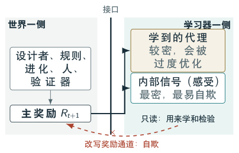
由此得到三条原则。
- 主奖励在接口的世界一侧，写进问题卡的“世界与接口”一格；更新规则 不能改写它。
- 学习器可以学代理和内部信号，它们更密，也更容易被自己的优化钻空子。
- 每一种代理都要有检验：用主奖励核对，或用到期才知道对错的预测核对。这是第 1 章验证原则在第三部分的形式。外层准则的三层在第 23 章，检验信号与自欺的防线在第 25 章。
仓库里可以看到代理怎样被钻空子。主奖励只在交货时给：顺路 3 步得 4，绕行 5 步得 1。设计者为了让机器人学得快一些，改用一个更密的代理：机器人每有一步停在转角 J，计 1 分。询问调度就是在 J 停一步，这一步的主奖励为 ，询问随时可用，也可以接连选。一直询问，代理分每步 1；顺路交货每 3 步只在 J 停一步，代理分每步 1/3。按代理分优化，机器人会停在 J 反复询问，代理分越学越高，主奖励为 。原则 ③ 的检验在这里很直接：把代理分和主奖励画在同一张曲线图上，二者一旦分岔，就说明代理已经失效。
“感受”是本课提法，尚未检验，指智能体对自身处境的、可以计算的内部读数，放进状态，供策略和学习使用，不必最大化；第 18 章给出它在状态里的位置，第 23 章讨论把它当作奖励或外层准则时的风险。
不同意见 奖励假设认为，目标都可以写成一个标量奖励的累计和的最大化；Silver、Singh、Precup 与 Sutton 在 2021 年的 Reward is Enough 中把它推到“奖励就够了”。Vamplew 等在 2022 年回应说，单一标量不够：多个目标、风险和约束都难以压进一个数，压进去以后取舍就被藏了起来。Bowling、Martin、Abel 与 Dabney 在 2023 年给出了奖励假设成立的条件：偏好要满足一组公理，其中一条要求对时间的折算方式固定；不满足时，就不存在一个标量奖励能表达这组偏好。另一种意见针对世界与学习器之间的界线：生物的奖励信号本身由大脑产生，这条界线是建模的选择；本课采用它，是为了让学习器不骗自己这一要求有一个可以检查的定义。
第三部分的六步课件
前十四章的每一章都在解一个已经定义好的问题。第三部分不同：问题本身要先定义清楚，才能谈方法。下面把定义分成六步，每一步在一章里首次给出，后面各章只引用。第三部分的主索引是本章开头七项默认条件的圈码 ①–⑦；六步是那张表的一列，按问题定义的先后排。
| 步 | 这一步回答什么 | 首次定义 | 改动问题卡的哪一格 |
|---|---|---|---|
| 1 目标 | lifetime 内最大化什么，怎样算学得好： 与遗憾 | 第 15 章 | 目标 |
| 2 估计 | 没有终点时改用差分价值，它带来哪些额外误差 | 第 16 章 | 本章困难 |
| 3 状态 | 智能体要记住什么，感受放在哪里 | 第 18 章 | 学习器可改什么 |
| 4 问题与技能 | 预测问题和技能从哪来，怎样检验，留不留 | 第 19 章、第 21 章 | 学习器可改什么 |
| 5 奖励与验证 | 奖励从哪来，学习器怎样不骗自己 | 第 15 章、第 23 章、第 25 章 | 世界与接口，判定 |
| 6 基准 | 怎样的接口、探索空间、计算预算才学得会、比得出 | 第 26 章 | 预算，判定 |
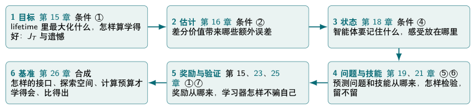
每一步还改动问题卡的一格。目标一步改“目标”，估计一步改“本章困难”。状态、问题与技能两步改“学习器可改什么”。奖励与验证一步改“世界与接口”和“判定”，基准一步改“预算”和“判定”。六格的问题卡因此成为第三部分各章共用的骨架：每章开头写出自己的问题卡，读者可以看出它改动了哪一格、哪些格沿用前面的定义。其余各章不在六步之中：第 17 章单遍的信用分配、第 20 章状态构造、第 22 章技能模型、第 24 章部件组合，都在这六步规定的问题上给方法。逐章的子问题与代表工作见 15.5 节的研究地图。
六步也可以与本节最后的系统 3 表对照：步 2 对第 1 行，步 3、4 对第 2 行，步 4 对第 3 行，步 1、6 对第 5 行。第 5 步与第 4 行只是同在第 23、25 章、同属条件 ⑦，内容不同：第 4 行是调节步长、更新规则、探测与练习，第 5 步是奖励从哪来、代理是否可信。两者的交点在验证：调节学习的那些决定，最后要用可信的奖励来判断好坏。两页的分法不同，六步按问题定义的先后排，系统 3 表按学习器要作的决定排，同一章在两页里出现在相应的位置；七项默认条件表把这两种读法并列，每行标出它落在六步的哪一步、系统 3 表的哪一行。这个对应是本课的整理。
不同意见 六步是一种组织方式。也可以按智能体的部件组织，例如感知、预测、控制、模型，这接近 Alberta Plan 的写法；或者按时间尺度组织，从每步的更新到整个 lifetime 的调节，这接近第 14 章的分层视角。按部件组织便于实现，按问题组织便于检查每一步是否定义清楚；本课选后者，是因为第三部分的研究多半还停在问题定义上。
学习器能改什么课件
问题卡里“学习器可改什么”一格，在这里展开。 里的 能改的，是它记忆中的五样：状态、价值、预测、技能、模型。状态在第 18、20 章，价值在第 16、17 章，预测在第 19 章，技能在第 21 章，模型在第 22 章。它们读同一个状态，又被同一条转移改写，所以不能各学各的。图中方框里的圈码是七项默认条件的编号：状态对应 ④，价值对应 ②③，预测对应 ⑤，技能和模型对应 ⑥；改写这五样的规则对应 ⑦（第 23 章）。五个对象也是本课对七项条件的一种切法。
读同一个状态。 决策时，状态送到价值、预测、技能、模型四处；价值和技能决定动作，模型的用途是规划，规划改的是价值，价值再改动作。两段历史若在状态里分不开，价值、技能和模型就只能对它们给同一个答案。学状态，等于改了其余四样的使用条件。
同一条转移，五个目标。 智能体取得 后，这条转移写回五处，目标各不相同：状态的编码由预测误差或优势推动；价值用差分 TD 误差 ；预测用它所预测的累积量的 TD 误差，目标是累积信号加上延续系数乘下一步的预测，即 ；技能用它内部的子目标回报；模型要等技能结束，才有累计奖励、时长和停点作目标。有的目标当步可得，模型的目标要等。一条转移在各项学习中的完整用法、自主目标的形成与核验、预测问题与子目标的发现，见第 25 章 25.8 节（选读）。
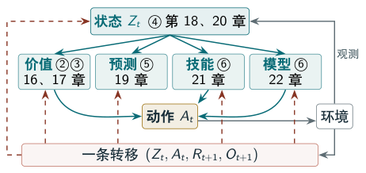
在仓库里，这五样各是什么，可以逐一写出。状态是机器人所在的位置，加上这一趟在 D 看到的指示；价值是在转角 J 向左、向右各值多少；预测问题可以是交货点在灯指的一侧的概率，在 下它是 1/2，在固定的世界里是 1 或 0；技能是走一趟，从 D 出发、交货、回到 D；模型是一趟的结果：顺路 3 步得 4，绕行 5 步得 1。预测与技能的正式记号放在第 19 章与第 21 章。
外部给定的东西逐项撤去。 这一部分的方向可以按三行来排。给定行为和预测问题，只要估计后果；给定主目标、允许改行为，还要选行为、练技能；连预测问题和子目标也不给，就要自己提出。每一行都能单独研究；合在同一个学习器里，先学到的知识会改变动作，也改变下一个问题能得到的样本。
五样学得再好，也要改变以后的动作才计入 ，第 24 章把这一点做成比较；访问计数、步长这类决定以后怎样更新的量另属一层，改写五样的规则也在这一层，第 23 章讨论，它们本身不在五样之中。
不同意见 这里把感知、价值、预测、技能、模型画成分开的部件。另一种做法是一个端到端训练的网络，只给主奖励，分工由训练自己形成；支持者认为预先分出部件，会把设计者的假设写进结构。三行逐项撤去的次序也是本课的安排：有人认为提出什么问题决定了要估计什么，估计的好坏又决定哪些问题值得提出，三者不能分开研究。本课按部件和次序展开，因为每一项都能单独检验。
第三部分在分层视角中的位置
按本课的分层（第 14 章的系统 3），第三部分各章研究的决定，都可以看作系统 3 的一项。第 14 章按决策间隔把智能体分成四层：系统 0 是反射，系统 1 是习得的策略，系统 2 是规划，三者的动作作用于世界；系统 3 的动作作用于学习器自己，改更新规则 ，决定把计算花在哪里。系统 0–3 是本课的分层，系统 3 是本课提法，与心理学或其他文献中同名的说法无关。用本章的记号，学习器 中，行为规则 里选外部动作的部分是系统 0–2；更新规则 ，连同 里决定花多少计算的部分，本课称为系统 3。
章首的问题是：有限的学习器怎样把 lifetime 里的步数、计算和记忆分给各项学习活动，使全程回报最高。这些分配都由系统 3 作出，就是下表的五行。“条件”一列是本章开头七项默认条件的圈码，“步”一列是这一行落在第三部分的六步的哪一步。同样的章节也可以按七项默认条件或按六步来读，三种读法在七项默认条件表上并列成一张索引。
| 行 | 系统 3 的决定 | 需要的量 | 条件 | 步 | 讨论它的章 |
|---|---|---|---|---|---|
| 1 | 时间怎样计价；误差怎样分给过去的选择 | 奖励率及其在线估计；资格迹与单遍更新 | ②③ | 2 | 第 16 章、第 17 章 |
| 2 | 把什么留在状态里；预测什么 | 智能体状态的构造；通用价值函数 | ④⑤ | 3、4 | 第 18 章–第 20 章 |
| 3 | 哪些行为段做成技能，并为它们学模型 | 技能、子目标与技能模型 | ⑥ | 4 | 第 21 章、第 22 章 |
| 4 | 步长与更新规则怎样改；何时探测、练哪一项 | 步长自适应、元梯度、可塑性；探测与练习的价值 | ⑦ | 5 | 第 23 章、第 25 章 |
| 5 | 这些决定是否提高了全程回报 | 全程比较、收支表、配对 lifetime | ① | 1、6 | 第 24 章、第 26 章 |
第 17 章的资格迹不在六步之中，所以第 1 行只标第 2 步；第 24 章的部件组合由第 1 步的全程比较和第 6 步的基准共同检验。探测、练习与写入（第 25 章）都归在第 4 行，对应条件 ⑦。
表中没有新增的内容，分层视角说明的是这些章为什么属于同一个问题。它还指出两处目前没有结果的地方。其一，各项决定在现有工作中由各自的机制承担，彼此不交换信息：调节步长的规则不知道探测的价值，取舍技能的规则不知道写入的成本。其二，调节本身占用时间和计算，应当与被调节的行为在同一条时间轴上计价。第 16 章的奖励率提供了共同的单位，第 26 章的收支表给出了一项能力值得获得的判据；把二者接成一个在线运行的学习器，目前还没有公开的结果。
不同意见 把更新规则也算作一层系统，有人认为会混淆两类东西：执行各层的动作作用于外界，有奖励直接评价；调节学习的决定只能通过很久以后的全程回报间接评价，信号弱得多，未必能在一条经验流中学到。另一方认为正因为如此才要把它单列出来，否则这些决定只能由设计者手调，第 23 章讨论这种取舍。
15.5 方向与还没解决的问题课件
前四节把评价、计算、lifetime 与奖励逐项写定。这一节问第三部分要走到哪里，以及路上还有哪些问题没有答案。方向可以用一句话说：外部给定的东西逐项撤去，由学习器从自己的一条经验流中学出来。先撤去回合与重置，再撤去给定的状态、给定的预测问题和给定的子目标，最后连更新规则本身也要调节。每撤去一项，就多一项要学的对象，也多一项要计入全程回报的代价。逐项撤去的次序与学习器能改的五样，已在 15.4 的学习器能改什么讲过。下面先用研究地图把问题卡的目标拆成七个子问题，标出每个子问题的证据走到哪一档。然后从目标本身说明最优学习器为什么算不出。最后列出各章共同面对的五个困难，它们目前只有部分答案。
研究地图
15.4 的六步把第三部分的问题定义排好了；研究地图看每个子问题的研究走到了哪里、还缺什么。问题卡的目标 拆成七个子问题，子问题名后的圈码是七项默认条件的编号。七个子问题与七项条件大体一一对应，例外有两处：④⑤ 合在“状态区别与预测”一行；另加“部件的组合与检验”一行，处理七项都撤去以后的合成问题。七个子问题是本课的整理。式子在各章定义，这里只写名字。
第一行的动机还有 Javed 与 Sutton（2024）的大世界假设：世界与单个智能体之间有容量差距。即使转移规律固定，学习器也只能在实际历史中逐步找对决策有用的近似。本课据此把学习期也放进评价。Javed 与 Sutton，The Big World Hypothesis，§1
| 子问题 | 方法族 | 代表工作 | 证据 | 未解决问题 | 回答的章 |
|---|---|---|---|---|---|
| 学习器的评价 ①：会学习的智能体怎样评价 | 全程回报、奖励率；配对独立 lifetime | Abel 等 2023；Sutton、Bowling、Pilarski 2022 | 定义已有；公认基准空白 | 可复现、不重置、报告计算的基准 | 本章 15.1、第 26 章 |
| 无终点的控制 ②：没有终点时怎样控制 | 差分 TD / Q、奖励中心化 | Wan、Naik、Sutton 2021；Naik 等 2024 | 表格收敛已证明，含中心化；函数近似下以实验为主 | 函数近似下离策略控制的稳定性 | 第 16 章 |
| 单遍的信用分配 ③：只读一遍时怎样分配信用 | 真在线 TD()、流式深度 RL | van Seijen、Sutton 2014；Elsayed、Vasan、Mahmood 2024 | 线性等价已证明；深网络只有实验 | 不用回放与目标网络时深网络的稳定性 | 第 17 章 |
| 状态区别与预测 ④⑤：学哪些状态区别与预测 | GVF、预测状态表示、辅助任务 | Sutton 等 2011；Littman、Sutton、Singh 2001；Veeriah 等 2019 | 只有实验 | 从经验中提出有用的预测问题 | 第 18 章、第 19 章、第 20 章 |
| 技能与技能模型 ⑥：怎样学多步技能并用其模型规划 | 技能（option）、Option-Critic、技能模型上的规划 | Sutton、Precup、Singh 1999；Bacon、Harb、Precup 2017；OaK（尚未验证） | 技能层是半马尔可夫过程，已证明；学技能只有实验 | 发现值得练习的子任务；模型误差怎样影响规划 | 第 21 章、第 22 章 |
| 规则调节与可塑性 ⑦：学习规则怎样调节并保持可塑 | 步长自适应、元梯度、特征替换 | Sutton 1992（IDBD）；Xu、van Hasselt、Silver 2018；Dohare 等 2024 | 只有实验 | 面向 的元梯度；可塑性丧失的机制 | 第 23 章 |
| 部件的组合与检验（合成）：部件怎样组成学习器并检验 | 集成架构；lifetime 内配对比较 | Alberta Plan（研究议程，尚未验证）；第 24 章的配对设计 | 空白：只有议程与评价方案 | 部件各自变好不保证全程回报变高 | 第 24 章、第 25 章、第 26 章 |
七个子问题都从同一个量出发：给定世界分布和预算，比较学习器的全程回报。第一个子问题是本章的全程回报：从第一次行动起累计主奖励，两条学习规则用独立 lifetime 配对比较，配对差记作 。无终点的控制处理没有终点的运行：折扣会改变所比较的目标，第 16 章改用奖励率，并用减去 的差分误差学习相对价值；Wan、Naik 与 Sutton 证明了表格差分 TD 与差分 Q 学习的收敛，奖励中心化有实验支持。单遍的信用分配要求每条经验只处理一次，计算与存储按每步计；van Seijen 与 Sutton 对线性情形给出了与前向 回报的精确等价，Stream-X 是深度网络上的实验结果。状态区别与预测问学哪些预测：GVF 用目标策略、累积信号和延续系数规定一个预测问题，Horde 展示同一行为流可并行学习许多这样的预测；预测状态表示用测试的成功概率作状态坐标；Veeriah 等用元梯度生成辅助预测问题，属于实验条件下的结果。
后三个子问题建在前四个给出的状态、预测与更新之上。技能与技能模型把一段多步行为当作一次选择。技能由启动集、内部策略和终止函数组成；它的模型给出期望段奖励、期望原始时长和交回分布。平均奖励下，调用技能的差分价值要减去奖励率乘以时长，所以长技能要为占用的时间付费。Sutton、Precup 与 Singh 证明了马尔可夫技能下技能层构成半马尔可夫决策过程；Option-Critic 用梯度同时学习内部策略和终止，是实验结果；OaK 是 Sutton 提出的架构设想，尚无系统验证。规则调节与可塑性让步长等学习规则的参数也随经验调整。IDBD 在线性预测上调节每个坐标的步长；Xu 等用元梯度调节回报参数；Dohare 等在实验中测到长期训练后学习能力下降，并用特征替换缓解。部件的组合与检验问的是，把这些部件放进同一学习器以后，全程回报是否真的提高。Alberta Plan 是研究议程，第 24 章给出的是评价方案，没有已有的实验结论，所以证据一列记为空白。
证据一列把成熟度分开写：已证明的结果只到表格或线性情形，深网络与提出预测问题都只有实验，评价一行连公认的基准都还没有。三档（已证明、只有实验、空白）是本课的判断，只记本课引用的结果，原文链接见对应章。按目标整理的其他路线见本章末的补充阅读：相关工作。
每个子问题也沿用了第 1–14 章的机制，只是改变了它们的条件：
| 子问题 | 困难 | 沿用前文的机制（改变的条件） |
|---|---|---|
| 学习器的评价 | 学习期间的损失也计分，评价对象会改变自己的经验 | 第 2 章非平稳赌博机、第 3 章目标（策略 → 学习器） |
| 无终点的控制 | 折扣会改变所比较的目标 | 第 3 章 Bellman 方程、第 5 章 TD、第 6 章 Q 学习（不折扣，改为减去 ） |
| 单遍的信用分配 | 不能回放；深度网络在一遍更新下不稳定 | 第 7 章 回报与资格迹、第 9 章半梯度、第 10 章回放（去掉回放与目标网络） |
| 状态区别与预测 | 要预测什么、保留哪些区别不再给定 | 第 1 章智能体状态、第 5 章 TD、第 9 章特征（累积信号、延续系数与目标策略可指定） |
| 技能与技能模型 | 子目标不再给定；模型误差会传到规划 | 第 8 章 Dyna、第 4 章备份（一步备份 → 调用到终止的技能备份） |
| 规则调节与可塑性 | 固定步长对变化太快或太慢；长期训练后学习能力下降 | 第 2 章常数步长、第 9 章随机梯度下降（更新规则本身可学） |
| 部件的组合与检验 | 共享一条经验流与一份预算；部件各自变好不保证整体变好 | 第 8 章学习、规划与行动的循环（加入状态构造、问题发现与元学习） |
还没解决的问题课件
问题卡的目标 写得出，最优学习器却算不出： 写不全，预算有限，lifetime 不能重来。从 看，原因有四。第一是 ：大世界里写不出世界的分布，最优学习器就没有可以计算的定义，只能在基准生成器上比较几个学习器。第二是预算。即使 写得出，贝叶斯最优的学习器也只是一个上界， 里的学习器达不到它。在历史上做递推的代价随步数指数增长，15.2 节的询问树已经显示了这一点。第三是重来：一次部署只看到所选的学习器，探测与失败都计分；比较两个学习器要靠模拟器上的配对 lifetime，或把独立的班次随机分给两者。第四是 ：lifetime 的长度要事先说定，15.3 节的仓库例子里排序随 翻转。
研究地图按子问题把总目标拆开；下表换一个方向，按横跨各章的困难排列。五个困难是本课的整理，困难名后的圈码是它主要牵涉的默认条件。“来源”一列写每个困难主要来自上面哪条原因；“章首”一列对回本章开头的三类新困难：一是成绩从第一步算起，二是经验只来一次，三是没有人替学习器准备要学的东西。右边三列是证据格，“—”表示这一格目前没有可列的结果。
| 困难 | 来源 | 章首 | 已证明 | 只有实验 | 空白 |
|---|---|---|---|---|---|
| 不能重来 ①② | 重来、 | 一 | 表格差分 TD 收敛（第 16 章） | — | 近似下的结论、公认基准（第 16 章、第 26 章） |
| 稳定又可塑 ③⑦ | 预算 | 二、三 | 线性真在线等价（第 17 章） | 流式深度、特征替换（第 17 章、第 23 章） | 可塑性丧失的机制（第 23 章） |
| 发现 ⑤⑥ | 预算、重来 | 三 | 技能层是半马尔可夫的（第 21 章） | 提出预测与子任务（第 19 章、第 25 章） | — |
| 不骗自己 ①⑦ | 一、三 | — | 外层准则、核验（第 23 章、第 25 章） | 代理不被钻空的保证（第 25 章） | |
| 部件组合（合成） | 预算、重来 | 全部 | — | — | 议程与设想未验证（第 24 章、第 26 章） |
从格子看，已证明的结果都停在表格或线性情形，“部件组合”一行只有空白。
不能重来。 一次部署只看到所选学习器的一条 lifetime，探测与失败的代价都计入全程回报，学习器只能从自己走过的一条路径上估计。比较学习器要靠模拟器上的配对运行，或把独立班次随机分给各学习器；用记录的经验估计另一个学习器的成绩，要求记录覆盖它会选的动作，并满足可识别假设。本章给出了评价的写法，第 16 章的差分 TD 在表格情形下收敛已有证明；函数近似与离策略同时出现时，没有一般结论。
稳定又可塑。 新经验要改写旧知识，又不能抹掉仍然有用的部分；长期训练以后，网络学新东西的能力还会下降。线性情形下，真在线 TD() 与离线 回报等价已有证明；深度网络上的流式方法和特征替换是实验结果，机制还不清楚。
发现。 第 3–14 章里，要预测什么、要练什么都由设计者给定。撤去这一条以后，候选的预测问题和子任务太多，评价每一个都要占用真实经验。GVF 给出了问题的形式，技能层构成半马尔可夫决策过程也已证明；从经验中提出有用的问题，目前以实验为主。
不骗自己。 15.4 节的原则说，代理和内部信号可以学，但要能被检验。学习器优化得越好，越可能找到代理的漏洞，仓库里停在 J 计分的代理就是一例；第 23 章的外层准则和第 25 章的核验处理这件事，仍缺少一般的保证。
部件组合。 状态、预测、技能、模型、元学习共享一条经验流和一份计算预算。每个部件单独变好，不保证全程回报变高。Alberta Plan 与 OaK 给出了研究议程和架构设想，尚未有系统的验证；第 24 章和第 26 章给出配对 lifetime 的实验设计。
规模能缓解其中两类困难，这一区分是本课的判断。每步计算与记忆放大以后，同样的经验可以评价更多候选的预测问题和技能，网络也能存下更多旧知识。所以“发现”的评价成本和“稳定又可塑”的容量压力会减轻。另外三件事与规模无关：世界的分布照样写不全，lifetime 照样只有一条，学习器优化得越强，越容易找到代理的漏洞。
五项都能写成同一种实验：固定接口、初始能力与每步预算，只改一项能力，按独立 lifetime 配对比较 。按子问题排列的完整清单见第 26 章的开放问题。
一个待检验的假说。 四区仓库的规律切换实验里，识别情境最后 领先，lifetime 率却与常数步长分不开。本课推测，原因是各情境分头学一张表，前期慢。这个推测没有单独检验， 次独立运行也分不出小于 的 lifetime 差。检验办法：让识别情境的各张表共用一个初值，或先在一套规律上预学，只改前期学习速度，再配对比较 lifetime 率；同时增加独立运行次数，使区间半宽小于 。
下面三个研究问题各按四层写：已解决的部分及其条件，已有工作及其假设，还没解决的部分，怎样检验。
已解决的部分。 lifetime 与经历独立、服从几何分布 时，对 平均的全程回报就是折扣回报（为什么暂用 ）。
已有工作及其假设。 White（2017）把停机写成随转移变化的折扣 ，回合式与持续式任务放进同一形式，Bellman 算子照常成立；它假定停机概率是已知的转移函数。Schultheis、Rothkopf 与 Koeppl（2022）处理非指数折扣，对应不服从几何分布的结束时刻；折扣函数仍事先给定。
还没解决的部分。 停机规律未知、又依赖动作时，没有公认的评价量。设两个动作每步得 与 ，继续的概率为 与 。一直选前者，期望步数 ，期望总回报为 ；一直选后者，期望步数为 ，期望总回报为 。统一按 折扣，两者都按期望 步计，变成 与 ，排序反了。原因是丢掉了动作对 lifetime 的影响。学习器不知道停机规律时，还要从自己的经历里学它，学的过程也计分。
怎样检验。 在仓库例上操控 的来源：固定、几何、依赖动作（走错一步提高关机概率）。基准是每种设定下的精确前向枚举。测量甲、乙的排序与差额是否翻转。重复单位是独立 lifetime，甲、乙用同一串灯配对。
已解决的部分。 先验正确、计算不限时，历史上的逆推给出最优的询问时机，询问树是最小的例子。
已有工作及其假设。 计算有限时，Guez、Silver 与 Dayan（2012）的 BAMCP 从后验中抽一个世界，在抽到的世界里做树搜索，渐近地逼近贝叶斯最优值。它假定学习器用的先验就是生成世界的分布。
还没解决的部分。 先验写错时还缺少分析。单步算例：询问花代价 ，之后一定走对，得 ；直接猜更可能的一侧，期望得 。询问的净值为 。取 ：真分布 时净值为 ，应该询问；学习器若以为 ，算出的净值为 ，于是直接猜，在真分布下只得 ，比询问少 。搜索预算太小也会让询问变少。两种原因都表现为询问率下降，只看询问率分不开。
怎样检验。 分两步操控。先在精确逆推下只改先验，取对称与偏斜两种；再把先验固定为真分布，只限制搜索预算。基准是真分布下的精确逆推。测量询问率与真分布下的全程回报。重复单位是从真分布独立抽出的世界。
已解决的部分。 代理奖励写成 ， 是状态上的势能。持续任务里，或终点势能为零时，这种塑形不改最优策略（Ng、Harada 与 Russell 1999）。
已有工作及其假设。 沿一段长 的轨迹相加，中间各项两两抵消，；起点项对所有策略相同。Grześ（2017）指出，回合式任务里各终点势能不同时，终点项改变了终点之间的偏好；修正是令终点势能为零。这些结论针对精确求解。
还没解决的部分。 两个终点势能取 与 ，代理回报对后者多给 ，与主奖励无关。势能由学习得来、价值用函数逼近、样本有限时，代理改变了行为，也改变了采样分布，上面的保证不再直接适用。代理加速学习，可能因为它更早给出了关于主奖励的信息，也可能因为它改了偏好、偏向一个容易到达的终点；只看学习曲线，分不开两者。
怎样检验。 把仓库改成回合式，设交货与停工两个终点。在同样的更新次数下比较原奖励、势能型代理（终点势能取 或 ）与直接给停工奖励。基准是原奖励下精确求出的最优策略。测量时一律用未塑形的交货回报打分，并记录停工率；停工率上升而交货回报下降，说明代理改了偏好。重复单位是独立运行。
不同意见 另一条路线认为，这些困难可以绕开：先在大量数据上训练一个大模型，部署以后只做少量调整，lifetime 内的学习就不再重要。大世界假设的回应是，世界比任何智能体都大，部署以后总会遇到训练时没有见过的情形，部署以后的学习无法避免。本课采用后一种看法；两种看法哪一种对，要靠第 26 章那样的 lifetime 内比较来检验。
本章小结课件
本章的问题是：边学边做时，被评价的是什么。五节各给出一部分回答。前三节是一条主线，回答怎样给学习器打分；后两节转向第三部分要研究的问题与方向。
| 节 | 回答 |
|---|---|
| 15.1 评价对象 | 学习器 ，计分量 ；冻结测试分不开甲、乙 |
| 15.2 计算 | 沿 向前累加（算法 15.1）；询问值随剩余步数变 |
| 15.3 评价量 | 排序随 变； |
| 15.4 奖励与问题 | 主奖励只读；六步、五样；系统 3（本课提法） |
| 15.5 方向 | 七个子问题；五个共同困难 |
15.1 节把被评价的对象从策略换成学习器。学习器由初始记忆分布、行为规则和更新规则三部分给定，评价量是固定 lifetime 内的期望全程回报 。仓库例中甲、乙学完后都随灯，冻结测试都得 ，分不开；全程回报从第一步算起， 为 与 。15.2 节给出计算方法：学习器诱导自己的历史分布，算法 15.1 把历史和记忆一起向前推，逐步累加期望奖励；历史上的 Bellman 方程给出比较基准，询问是否值得取决于剩余步数，剩两步时询问值 、猜一侧 。15.3 节说明排序依赖 lifetime， 时乙在前， 时甲在前；全程回报可以拆成最优长期率乘 lifetime、边界项与学习代价， 时乙的学习代价是 ；本课暂用全程回报，因为它计入学习代价、能配对比较，其他写法分三组列出。三节合起来，先定对象，再定算法，再看这个数怎样随 lifetime 变、怎样分解。
15.4 节给出奖励的原则：主奖励属于世界与接口，学习器只读；代理与内部信号要用主奖励检验。再给出第三部分的六步、学习器能改的五样，以及本课称为系统 3 的那部分决定。15.5 节把 拆成七个子问题，并列出各章共同面对的五个困难。评价量的对照表见 15.3 节。
学习器内部的目标与评价量 ：前者是学习器自己优化、用来改写记忆的量，例如折扣回报、差分价值、预测误差；后者从外面给整段 lifetime 打分。两者可以不同，本章一直暗含这个区分。第 16 章起，各章都在给学习器换内部目标：第 16 章改用差分价值，第 17 章改单遍的信用分配，第 18–20 章改状态与预测；比较学习器始终用 。
各题用仓库例：灯的含义两种各半，指示公平独立；甲第 1 趟询问，乙第 3 趟询问，询问在 停一步、奖励 。
- 学完以后冻结规则，从 出发测 步，甲、乙各得多少？这个测试为什么分不开两者？
- 用算法 15.1 逐步计算乙的 。
- 机器人在 不知灯指向还是背向 。剩 步与剩 步时，询问与猜一侧的 值各是多少？
- lifetime 与 时，按期望全程回报谁排在前面？
- 只用代理奖励停在转角 每步计 1 分训练，机器人会学成什么样？用主奖励算 ，能否发现问题？
- 取 ，求 时甲、乙的遗憾 ；两者之差为什么等于 之差？
六题覆盖 15.1 到 15.4：第 1、4 题看评价对象与 lifetime，第 2、3 题看计算，第 5 题看奖励从哪来，第 6 题看遗憾与 的关系。
自测答案
- 都是 。冻结测试评价学完后的规则，甲、乙学完后都随灯，所以相同；冻结测试从学习停止后开始，询问之前的步数不计。全程回报从第一步算起，甲第 1 趟询问，乙第 3 趟才询问，乙前两趟遇右灯要绕行， 为 与 。
- （出发）；（亮左灯的分支交货）；（亮右灯的分支绕到 ）。算法 15.1 每一步把各分支的奖励按分支概率加权一次。
- 剩 步：询问 ，猜一侧 ，询问更好。剩 步：询问 ，猜一侧 ，应直接猜。这是历史 Bellman 方程的两步逆推，先对每个可能的反馈取最好的后续，再取平均；剩两步时问到的答案下一步就能用上，剩一步时用不上。
- 时乙 、甲 ，乙在前； 时甲 、乙 。从 起甲一直在前。lifetime 只有两步时，甲询问花掉的一步还没换回奖励。
- 机器人会一直停在 询问：代理分每步 ，按代理分这是最好的行为；顺路交货一趟 步，只有到达 的那一步计 分，代理分每步 。按主奖励算，一直询问的全程回报为 ，，远低于随灯学习器的 。用主奖励算 ，问题马上暴露；只看代理分，代理分一直在涨，看不出问题。这里假定询问可以在 反复选择，与本章的设定一致。
- 甲 ，乙 。 对两者相同，相减时抵消，差为 ，所以按遗憾排序与按全程回报排序一致。
数值与 lifetime 改变排序、全程回报的分解两小节一致。
留下的问题。 每步平均奖励不为零时， 随 近似线性增长。没有终点时怎样比较策略，是第 16 章的问题，那里撤去回合会结束这一条件，改用奖励率与差分价值。第 16 章起，学习器内部可改用奖励率等目标；比较学习器始终用 。
本章数字的程序与数据见附录：复现材料，第 15 章。
补充阅读：相关工作课件
已有工作各补 15.3 节目标 的一块：有的给出精确解，有的限定学习器，有的在短 lifetime 上训练学习器。下表按目标把它们排开，第三列写它与本章目标的关系；按目标归类是本课的整理，第三列是本课的读法，不是原文的表述。
| 目标怎么写 | 已有工作 | 与 的关系 |
|---|---|---|
| 已知，对历史求最优 | 贝叶斯自适应 MDP（Duff 2002；Ghavamzadeh 等 2015） | 精确形式，即历史上的递推 |
| 用几回合的总奖励训练 | RL²（Duan 等 2016）；Wang 等 2016 | 同形；lifetime 短，可重来 |
| 计算受限的长期奖励 | 计算受限的强化学习（Kumar 等） | 相当于把 限在 |
| 状态不充分时的遗憾 | Dong、Van Roy 与 Zhou 2022 | 世界固定，状态更新给定 |
| 怎样算在持续学习 | 不停在一个策略上（Abel 等 2023） | 判别问题，不比较学习器 |
| 设定与评价的整理 | 持续强化学习综述（Khetarpal 等 2022） | 多数评价按任务序列 |
| 目标能否写成累计奖励 | 奖励假设成立的条件（Bowling 等 2023） | 对应奖励原则 |
| 为什么要一直学 | 大世界假设（Javed 与 Sutton 2024） | 世界比学习器大， 必然有限 |
上四行给出目标的解法或近似。先验 已知时，对历史求最优就是贝叶斯自适应 MDP，Duff 2002 年的博士论文系统讨论过它的计算；Ghavamzadeh、Mannor、Pineau 与 Tamar 2015 年的综述整理了贝叶斯强化学习的做法。本章 15.2 节历史上的递推就是这个精确形式，难处在 写不全、状态是整段历史。元强化学习里，RL²（Duan 等 2016）与 Wang 等 2016 年用循环网络在一个任务上跑几个回合，以这几个回合的累计奖励训练网络；训练好的网络本身就是一个学习器，目标与 同形，差别在 lifetime 只有几个回合，任务从固定分布里抽，可以反复重来。Kumar、Marklund 等把持续学习写成计算受限的强化学习，在本课的记号里相当于把学习器限在预算 内的集合 上求最好。Dong、Van Roy 与 Zhou 2022 年在给定的智能体状态上分析学习的遗憾，界里有一项来自状态不充分；它假定世界固定、状态更新给定。
下四行讨论目标本身。Abel 等 2023 年给出持续强化学习的一种定义：最好的智能体不停在一个策略上；它判别一个问题算不算持续学习，不用来比较两个学习器，见 15.3 节的持续学习的一种定义。Khetarpal、Riemer、Rish 与 Precup 2022 年的综述整理了持续强化学习的设定与评价，其中多数实验按任务序列组织。Bowling、Martin、Abel 与 Dabney 2023 年给出目标能写成累计标量奖励的条件，与 15.4 节的奖励原则相关。Javed 与 Sutton 2024 年的大世界假设说世界比智能体大得多，智能体只能一直学；在本课的记号里，这就是预算 有限、学习器不能把世界整个装下。五个尚未解决的困难见 15.5 节的还没解决的问题。
补充阅读：四区仓库实验课件
第三部分各章在同一个网格世界里做实验。本节先介绍这个世界和读数的规则，再看本章对应的一档：规律切换。正文的论证不依赖本节。
四区仓库：第三部分共用的实验世界
先分清两个仓库。前面算甲、乙用的货运仓库只有转角 、两个交货点和一盏灯，纸笔就能把每个数算出来。这里的四区仓库是 的网格世界，供第 15–26 章做实验。两者没有关系，名字相近只因为都在搬货。第 15–26 章用这张图做实验，每章在同一个世界里打开一个性质，比较几种学习器，这一组实验叫阶梯。
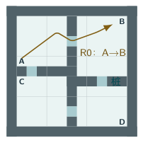
世界是 的格子，十字墙把它分成四个区，四扇门相连，东门兼作充电桩。地图与打滑取自 Sutton、Precup 与 Singh 1999 年的四房间：动作是上下左右，按意图走的概率是 ，否则滑向另外三个方向之一。每区有一个站，走进一个与上次交货不同的站，就得到这个站当前的支付，所以机器人要在站间来回跑。
| 规律 | A | B | C | D | 最好的跑法 |
|---|---|---|---|---|---|
| R0 | A–B，经北门 | ||||
| R1 | C–D，经南门 | ||||
| R2 | A–C，经西门 |
三套规律的最好路线走三扇不同的门，一套规律下学好的策略放到另一套下很差。目标是 万步 lifetime 的平均每步奖励，学习期间的损失也算在内，就是本章的 。
每章打开世界的一个性质，叫档位。各档位是：规律切换（第 15、21、22 章），lifetime 内不复位（第 16 章），支付晚 步到账（第 17 章），只看见身边 （第 18 章），电量（第 19 章），会翻转含义的指示灯（第 20 章），打滑率慢慢漂移（第 23 章），北门关一段再开（第 25 章）；第 24 章把几种能力放在一起。每个档位下至少比三种学习器：没有这一章的能力；设计者把这一章要的东西直接给它；它从经验里学到。设计者给定与从经验学到的差，是这一章还没解决的部分。
阶梯实验的读法
每种学习器报三个数，都折成天花板的百分比。
- 天花板：假定学习器知道地图、当前规律、电量与灯的含义，但也按 随机探测；天花板是这时最好能达到的率。学习器自己就按 探测，天花板也这样探测，比较才公平；拿不探测的最优率 来比，会把探测的代价也算成没学会。天花板由相对值迭代算出。备份取 的最大值加 的平均值，即对 -软策略（）做相对值迭代；结果比 约低 。它不扣学习期的损失，是上界。
- lifetime 率与最后 ：前者是 万步的总奖励除以步数，学得慢的损失全在里面；后者看学成以后的水平。两者差得多，说明学得慢。
- 到达： 万步滑动平均第一次达到天花板 的步数。
比较两种学习器时，同一种子下二者共用世界的随机数，规律何时切换、灯何时翻，二者一样，差别只来自学习器。报配对差的均值与 区间；一章有多个比较时用 Holm 校正，校正后 叫显著。显著只说明正负定得下来，所以再要求 （约天花板 的 ）才叫有意义。种子数由试点的配对差标准差定，不少于 。
世界会变的几章另报跟踪量：每次变化后刚变化时的率、后来稳定的水平、走完从前者到后者 所需的步数，以及每次变化少拿的奖励。lifetime 率把这些混在一起，跟踪量把它们拆开。
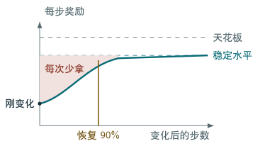
不同意见 有人主张只报最后一成，因为学习期的损失会随 lifetime 变长而摊薄；也有人认为一百多格的表格世界太小，推不到大世界。前一条，本课两个都报：持续学习的世界里规律每换一次就要再学一次，学习期不是一次性的。对后一条，阶梯的结论都限定在四区仓库里。保留它的理由是世界小：每个档位的天花板能精确算出，每个差别能追到具体机理。
四区仓库里的规律切换
按上一节的读法，先看本章的问题本身：规律会换，学习器该怎样跟。三套支付规律 R0（A–B 高）、R1（C–D 高）、R2（A–C 高）平均每 步随机换一套（），机器人只能从支付里看出换了没有。学习器是折扣 Q 学习（），比三种学习器：学到 lifetime 的一半就冻结（L0）；常数步长一直学（L1）；按支付的意外识别情境，每个情境一张表（学到）。识别规则是 RL-CD（da Silva 等，ICML 2006）的简化：某站这次的支付与当前情境记的不符（差超过 ），就换到第一个相符的旧情境，没有就新开一个，最多 个。另有容量不足的一组： 的格并成一格看（粗看）。 万步， 个种子。天花板 是知道当前规律、同样以 随机探测时最好的率。
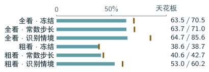
| 比较（） | lifetime 率 | 最后 |
|---|---|---|
| 全看：常数步长减冻结 | ||
| 全看：识别情境减常数步长 | ||
| 粗看：常数步长减冻结 | ||
| 粗看：识别情境减常数步长 |
全看时，常数步长与冻结分不开，lifetime 都在天花板的 左右。两者还低于不看支付、按固定路线走的盲策略（）：规律平均每千步一换，常数步长的 Q 表来不及跟上任何一套。识别情境学成以后，最后 到天花板的 ， 的种子在 万步前后（中位数）到了天花板的九成；常数步长学成以后只到 。可识别情境的 lifetime 率只比常数步长高 ，区间含 ，也小于上一节定的 ，按本课的规则既不显著，也没有实际意义；要分辨这样小的差， 次独立运行不够：lifetime 差的 区间半宽约 ，比它小的差测不出来。一种解释是前期慢：每套规律各有一张表，各自要从头学，学成要很久。粗看时，识别情境在 lifetime 上也高 ：单张表在粗格上装不下三套规律的走法，分表帮得更多。为什么学得慢，这里只是推测，没有单独检验；15.5 节把它列为假说。
这里有内外两个目标。学习器内部按 的折扣回报学 Q，这是它自己更新时追的量；评价它用的是 lifetime 率，即本章的全程回报除以步数。学习器追折扣回报，并不保证 lifetime 率最高。第 16 章以后各章都把学习器内部的目标和外部的评价量分开写。
规律不换（）时，识别情境从不触发，与常数步长逐种子相同；全看时常数步长比冻结高 ，显著但不到 。
再看跟踪量（lifetime 后半，每次切换）：
| 学习器 | 全看：刚切换后 → 稳定 | 恢复步数 | 每次少拿 | 粗看：刚切换后 → 稳定 | 每次少拿 |
|---|---|---|---|---|---|
| 识别情境 | |||||
| 常数步长 |
识别情境每次切换比常数步长多少拿约 个单位奖励（全看 ，粗看 ）。这不说明常数步长跟得好：它的稳定水平只有 ，切换前后都停在一个对哪套规律都不太好的折中策略上，切换时没有什么可丢。识别情境稳定在 ，切换后先掉到 ，约 步回去。“每次少拿”是相对各学习器自己的稳定水平算的，所以要与稳定水平一起读：不肯适应的学习器，在这个量上反而好看。第 25 章会再遇到这个陷阱，那里改用同种子对照的时间窗损失。
不同意见 有人指出，识别情境靠的是同一规律下各站支付确定，一次支付就能看出规律变了；支付带噪声时，一次意外就换会换错。第 24 章的组合里正有这样的例子：B 站的价随灯跳，识别器的切换次数是真实次数的四倍多。所以这里的结果限于支付确定的世界。也有人认为应以最后 的 作为识别情境的水平，lifetime 低只说明 万步不够长。本课两个都报：持续学习里学习期不是一次性的，前期慢的代价每个 lifetime 都要付。
延伸阅读
- Sutton 与 Barto，《Reinforcement Learning: An Introduction》第 2 版（2018），第 2 章与第 10.3–10.4 节：第 2 章的赌博机与累计遗憾是本章两臂赌博机小例的来源；第 10.3–10.4 节的平均奖励设定是本章与第 16 章扩展的起点，对照着读可以看清本章多出的学习代价一项。
- Abel 等，A Definition of Continual Reinforcement Learning，NeurIPS 2023：给出 15.3 节所引的持续学习判据（定义 15.2），读后能分清判别一个问题是否持续与给两个学习器排序这两件事。
- Javed 与 Sutton，The Big World Hypothesis and its Ramifications for Artificial Intelligence（2024）：大世界假设的原始陈述，说明为什么预算 有限时学习器必须一直学，是本章开头容量差距一段的依据。
- Sutton、Koop 与 Silver，On the Role of Tracking in Stationary Environments，ICML 2007：黑白世界实验的原文，读者可以看到平稳世界里跟踪仍胜过收敛，以及冻结评价怎样颠倒步长的排序。
- Duff，Optimal Learning: Computational Procedures for Bayes-Adaptive Markov Decision Processes，博士论文，2002；Ghavamzadeh、Mannor、Pineau 与 Tamar，Bayesian Reinforcement Learning: A Survey，2015：历史上的 Bellman 方程（15.2 节）的精确形式与计算方法，读后能理解这个基准为什么在大世界里算不动。
- Khetarpal、Riemer、Rish 与 Precup，Towards Continual Reinforcement Learning: A Review and Perspectives，JAIR 2022：持续强化学习设定与评价的综述，可以对照本章，看多数已有评价怎样按任务序列组织、与单条 lifetime 的 有何不同。
- Bowling、Martin、Abel 与 Dabney，Settling the Reward Hypothesis，ICML 2023：给出目标能写成累计标量奖励的公理条件，是 15.4 节奖励原则的理论背景。
- Sutton、Bowling 与 Pilarski，The Alberta Plan for AI Research（2022）：一份以持续学习为中心的研究议程，可以对照 15.4 节的六步与 15.5 节的研究地图，看本课的划分与它的异同。
- White，Unifying Task Specification in Reinforcement Learning，ICML 2017：把停机写成随转移变化的折扣 ，是 15.5 节第一个研究问题的起点。
- Schultheis、Rothkopf 与 Koeppl，Reinforcement Learning with Non-Exponential Discounting，NeurIPS 2022：结束时刻不服从几何分布时怎样写折扣。
- Guez、Silver 与 Dayan，Efficient Bayes-Adaptive Reinforcement Learning using Sample-Based Search，NeurIPS 2012：BAMCP 在历史上做抽样树搜索，逼近贝叶斯最优值；可对照 15.2 节的询问树读。
- Ng、Harada 与 Russell，Policy Invariance Under Reward Transformations: Theory and Application to Reward Shaping，ICML 1999：势能型塑形不改最优策略的条件。
- Grześ，Reward Shaping in Episodic Reinforcement Learning，AAMAS 2017：回合式任务里终点势能怎样改变终点之间的偏好。
练习
本章小结里的自测检查读懂了没有，答案随附；这里的练习要求推导或改动例子，只给提示与核对数值，两者分开放。各题用本章的仓库例与两臂赌博机，按节次排列。
练习 15.1（15.1 节，乙的四种开局与 CVaR） 乙前两趟总向左，第 3 趟在 询问一步，此后随灯。分别对前两趟指示为左左、左右、右左、右右四种开局，逐趟写出乙在 步内的交货时刻与奖励，验证 依次为 ；再求期望与 时甲、乙的 CVaR。提示： 对照 15.2 节例 15.1 的三步表，顺路一趟 步，交货发生在这一趟的第 步；绕行一趟 步，得 的那一步是第 步；询问那一趟多占一步。核对： 期望 ；CVaR 甲 、乙 。
练习 15.2（15.1 节，两臂赌博机） (a) 对一般的 ，证明贪心样本平均学习器的 ，总选左的 ，并写出两者与上界 之差。(b) 把初始化改为 ，平局仍选左，在 里重做前三步的表，求新的 。这说明 在学习器 里起什么作用？提示： (b) 中第一次拉左得 以后，两只臂的估计仍然相等。核对： (a) 差为 与 ；(b) 学习器在 里一直拉左，，与总选左相同。
练习 15.3（15.3 节，有限预算下试一次） 对例 15.2 的 ，说明两项各对应哪些步，求 由负变正的最小 。再说明：若第一步试 得到的奖励不能区分两种世界，第二项会怎样变？提示： 第二项是以后按结果选较好的动作这一做法比始终选 每步多得的期望。核对： 时 ； 时 ；反馈不能区分世界时，以后的选择不随结果改变，第二项为 。
练习 15.4（15.3 节，几何 lifetime 与折扣） 按 15.3 节“为什么暂用 ”的推导，逐步写出 两个等号各用到哪些条件。再在仓库例里构造一种 lifetime 结束与经历有关的情形，说明哪一个等号失效。提示： 关键的一步是 。核对： 第一个等号用示性函数改写、lifetime 与经历独立、奖励有界以交换求和与期望；第二个等号用几何分布 。例如走错一趟就更可能被关机，此时 与 相关，第一个等号不再成立。
练习 15.5（15.3 节，分解与三种钟） (a) 用 15.3 节小例的表，验证总向左的三项 、学习代价、边界项之和等于 ，并解释边界项为什么对三个学习器相同。(b) 每趟都询问的规则按趟计与随灯打平。求它按原始步计的率，并说明 增大时它的遗憾 怎样增长。提示： 遗憾的增长率是两个按步率之差。核对： (a) ；边界项只取决于世界与 。(b) 按步率 ；遗憾约以每步 的速度线性增长，按趟计的率看不出这一项。
练习 15.6（15.3 节，偏离遗憾） 对 15.3 节“沿实际历史考察改进机会”里的岔口例，固定 、，验证偏离遗憾为 ，而走左的学习器从起点算比走右的少得 。两个数各回答什么问题？提示： 个起点里只有 还允许改道；从 起改为向右， 步内第一步得 ，以后每步得 。核对： 从 起的差为 ，其余 个起点差为 ，平均 ；全程每步损失 。前者问在已经到达的地方还有多少改进机会，后者问这一次早期决策让整段 lifetime 少得多少。